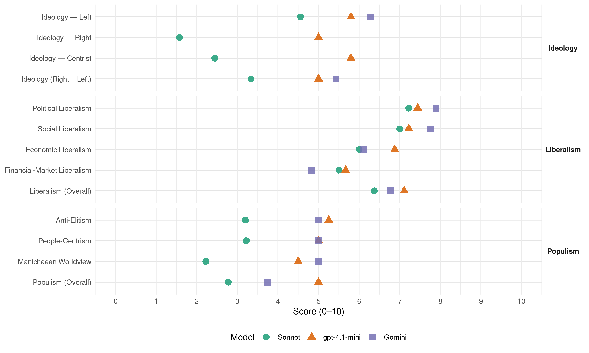

PASOK-KINAL (Greece, 2023)
manifesto_id 34315_202305
Get full text: This site shows derived annotations and short verbatim quotes only. The full manifesto text is © Manifesto Project / WZB — obtain it via manifesto-project.wzb.eu using the manifesto_id above.
Headline scores
| Dimension | Sonnet | gpt-4.1-mini | Gemini |
|---|---|---|---|
| Populism (Overall) | 2.8 | 5.0 | 3.8 |
| Anti-Elitism | 3.2 | 5.2 | 5.0 |
| People-Centrism | 3.2 | 5.0 | 5.0 |
| Manichaean Worldview | 2.2 | 4.5 | 5.0 |
| Ideology (Right − Left) | 3.3 | 5.0 | 5.4 |
| Liberalism (Overall) | 6.4 | 7.1 | 6.8 |
| Political Liberalism | 7.2 | 7.4 | 7.9 |
| Social Liberalism | 7.0 | 7.2 | 7.8 |
| Economic Liberalism | 6.0 | 6.9 | 6.1 |
| Financial-Market Liberalism | 5.5 | 5.7 | 4.8 |
Evidence per dimension
Economic Liberalism
Gemini · score 6.0 · verified · chunk 1
“υποστηρίζει την επιχειρηματικότητα και την δυναμικότητα του ιδιωτικού”
μορφές ψηφιακής εργασίας. Που υποστηρίζει την επιχειρηματικότητα και την δυναμικότητα του ιδιωτικού τομέα, αλλά όχι τις κρατικοδίαιτες
Gemini · score 6.0 · verified · chunk 2
“προαγωγή της επιχειρηματικότητας δημιουργεί συνθήκες υψηλής προστιθέμενης αξίας”
Ότι η προαγωγή της επιχειρηματικότητας δημιουργεί συνθήκες υψηλής προστιθέμενης αξίας σε βαθμό πολύ μεγαλύτερο
Gemini · score 6.0 · verified · chunk 3
“κίνητρα για συγχωνεύσεις των μικρών”
παράλληλα, να δημιουργήσει ένα αποτελεσματικό πλαίσιο φορολογικών και άλλων κινήτρων για συγχωνεύσεις των μικρών και μεσαίων επιχειρήσεων (ΜμΕ).
Gemini · score 6.0 · verified · chunk 4
“συμπράξεων με τον ιδιωτικό τομέα”
μέσα από ένα πρόγραμμα δημόσιων επενδύσεων και συμπράξεων με τον ιδιωτικό τομέα. Ο στόχος είναι
Gemini · score 5.0 · verified · chunk 5
“ζητά προτάσεις από ιδιώτες κατασκευαστές”
εφαρμογής των αποφάσεων. Ο Οργανισμός αυτός θα απορροφήσει και τον Φορέα Απόκτησης και Επαναμίσθωσης που προβλέπει ο νέος Πτωχευτικός Νόμος (ν.4738/2020) Η Πολιτεία μέσω του φορέα είτε διαθέτει είτε αγοράζει γη που κρίνεται κατάλληλη για οικιστική ανάπτυξη και διατηρεί τον έλεγχο του είδους και της φύσης της οικιστικής ανάπτυξης. Στη συνέχεια, ζητά προτάσεις από ιδιώτες κατασκευαστές, οι οποίοι θα κατασκευάσουν και θα διατηρήσουν την ιδιοκτησία των οικιστικών μονάδων.
Gemini · score 6.0 · verified · chunk 6
“διασύνδεσης με την τοπική κοινωνία και οικονομία”
Γενικά Λύκεια, ΕΠΑΛ, κόμβοι ανταλλαγής απόψεων, καινοτομίας και διασύνδεσης με την τοπική κοινωνία και οικονομία - κοινωνικούς εταίρους.
Gemini · score 7.0 · verified · chunk 7
“ανάπτυξη της επιχειρηματικότητας και της απασχόλησης”
θεμελιωθεί ένα παραγωγικό πλαίσιο για την ανάπτυξη της επιχειρηματικότητας και της απασχόλησης.
Gemini · score 6.0 · verified · chunk 8
“προώθηση του ανταγωνισμού στην ελληνική οικονομία”
και εκτίμηση των συνεπειών που είχαν στην κατεύθυνση περαιτέρω ανάπτυξης και προώθησης του ανταγωνισμού στην ελληνική οικονομία.
Gemini · score 7.0 · verified · chunk 9
“διαφανή λειτουργία της αγοράς προς το”
σύγκρισης τιμών και την διαφανή λειτουργία της αγοράς προς το συμφέρον του καταναλωτή.
gpt-4.1-mini · score 7.0 · verified · chunk 1
“Η οικονομική ανάπτυξη, οι εξαγωγές, οι επενδύσεις, η ανταγωνιστικότητα της οικονομίας, η καινοτομία και η παραγωγικότητα των επιχειρήσεων δεν είναι αυτοσκοπός”
Για εμάς, την σύγχρονη σοσιαλδημοκρατία, η οικονομική ανάπτυξη, οι εξαγωγές, οι επενδύσεις, η ανταγωνιστικότητα της οικονομίας, η καινοτομία και η παραγωγικότητα των επιχειρήσεων δεν είναι αυτοσκοπός. Είναι το μέσο και το όχημα για την βελτίωση του βιοτικού επιπέδου των εργαζομένων και της μεσαίας τάξης, την πραγματική μείωση των ανισοτήτων, την ουσιαστική προστασία των αδυνάμων και την αναγέννηση της ελπίδας ότι η νέα γενιά θα ζήσει καλύτερα από τους γονείς της.
gpt-4.1-mini · score 7.0 · verified · chunk 2
“αναβάθμιση της κεφαλαιακής βάσης και των ανθρώπινου δυναμικού της ελληνικής οικονομίας”
…πριν από την θέσπιση του Ταμείου Ανάκαμψης και Ανθεκτικότητας μέτρα για την οριζόντια ενίσχυση των παραγωγικών επενδύσεων αλλά και της απασχόλησης, με στόχο την αναβάθμιση της κεφαλαιακής βάσης και των ανθρώπινου δυναμικού της ελληνικής οικονομίας.
gpt-4.1-mini · score 8.0 · verified · chunk 3
“αγορά, ανταγωνισμός, επιχειρήσεις, φορολογία, ιδιωτικοποίηση, ελεύθερο εμπόριο”
…ενίσχυση της αγοράς, ανταγωνισμός, επιχειρήσεις, φορολογία, ιδιωτικοποίηση, ελεύθερο εμπόριο και επιχειρηματικότητα…
gpt-4.1-mini · score 7.0 · verified · chunk 4
“ενίσχυση της επιχειρηματικότητας και της ίδρυσης καινοτόμων επιχειρήσεων στον τουρισμό”
…ii. Ενίσχυση / υποστήριξη της επιχειρηματικότητας και της ίδρυσης καινοτόμων επιχειρήσεων στον τουρισμό. 4.6 ΠΟΛΙΤΙΣΤΙΚΟΣ & ΘΡΗΣΚΕΥΤΙΚΟΣ ΤΟΥΡΙΣΜΟΣ i. Αναβάθμιση και βελτίωση βασικών πολιτιστικών υποδομών…
gpt-4.1-mini · score 6.0 · verified · chunk 5
“Προτείνουμε γενναιότερες ενισχύσεις από το πρώτο παιδί, για να ενισχυθεί οριζόντια η τεκνοποίηση.”
…Προτείνουμε γενναιότερες ενισχύσεις από το πρώτο παιδί, για να ενισχυθεί οριζόντια η τεκνοποίηση. Αν ενισχυθεί ακόμη και στο επίπεδο των 1-2 τέκνων θα σημάνει μια εντυπωσιακή άνοδο πληθυσμού…
gpt-4.1-mini · score 7.0 · verified · chunk 7
“βιώσιμη κοινωνικο-οικονομική δραστηριότητα”
…ώστε να βελτιστοποιηθεί χρονικά και ποιοτικά η αποτελεσματικότητα των υπηρεσιών και η εξυπηρέτηση του σκοπού τους που θα είναι τόσο η προστασία του περιβάλλοντος, όσο και η υποστήριξη της βιώσιμης κοινωνικο-οικονομικής δραστηριότητα.
gpt-4.1-mini · score 6.0 · verified · chunk 8
“Η εφαρμογή του Συντάγματος χώλαινε ήδη από το 1975 επειδή δεν μπόρεσε να εμποδίσει το πολιτικό σύστημα”
Η εφαρμογή του Συντάγματος χώλαινε ήδη από το 1975 επειδή δεν μπόρεσε να εμποδίσει το πολιτικό σύστημα να ενδώσει τελικά στην ασφυκτική πίεση πελατειακών και οικονομικών συμφερόντων.
gpt-4.1-mini · score 7.0 · verified · chunk 9
“ενθάρρυνση της εισόδου νέων παικτών στην αγορά ηλεκτρονικών επικοινωνιών, με άμεσες επενδύσεις”
Τηλεπικοινωνίες: Τόνωση του ανταγωνισμού με την ενθάρρυνση της εισόδου νέων παικτών στην αγορά ηλεκτρονικών επικοινωνιών, με άμεσες επενδύσεις σε νεες και καινοτόμες τεχνολογικές υποδομές. Να μην αφήνονται περιθώρια για την κατάχρηση της δεσπόζουσας ή της ολιγοπωλιακής θέσης των πρώην κρατικών μονοπωλίων και των μεγάλων τηλεπικοινωνιακών παρόχων, και παράλληλα να διασφαλίζεται υψηλό επίπεδο ανταγωνισμού που θα επιτρέπει την παροχή όλου του εύρους των ποιοτικών τηλεπικοινωνιακών υπηρεσιών στις καλύτερες δυνατές τιμές.
Sonnet · score 5.0 · mixed · chunk 1
“η ελεύθερη αγορά είναι θεός, για την παραδοσιακή αριστερά δαίμονας, για εμάς ένα εργαλείο”
Για τη δεξιά η ελεύθερη αγορά είναι θεός, για την παραδοσιακή αριστερά δαίμονας, για εμάς ένα εργαλείο που απαιτεί ισχυρές ρυθμίσεις για να υπηρετεί το δημόσιο συμφέρον
Sonnet · score 6.0 · verified · chunk 2
“προαγωγή της επιχειρηματικότητας δημιουργεί συνθήκες”
Ότι η προαγωγή της επιχειρηματικότητας δημιουργεί συνθήκες υψηλής προστιθέμενης αξίας σε βαθμό πολύ μεγαλύτερο από τις διοικητικές παρεμβάσεις
Sonnet · score 6.0 · mixed · chunk 3
“ζεύξη επενδύσεων δημόσιου και ιδιωτικού τομέα”
Η χωροθέτηση, η αδειοδότηση, η ζεύξη επενδύσεων δημόσιου και ιδιωτικού τομέα ίσως αποτελούν ένα από τα μεγαλύτερα βιομηχανικά στοιχήματα
Sonnet · score 6.0 · verified · chunk 4
“κίνητρα συμπράξεων και συνεργασιών”
εκσυγχρονισμός και τεχνολογική αναβάθμιση σκαφών, μέσω κίνητρα συμπράξεων και συνεργασιών, με εγχώριες εταιρείες παραγωγής λύσεων
Sonnet · score 5.0 · mixed · chunk 5
“μικρομεσαία επιχειρηματικότητα”
Ταυτόχρονα ενισχύεται στοχευμένα και η μικρομεσαία επιχειρηματικότητα. Στόχος η δημιουργία 100.000 νέων θέσεων εργασίας
Sonnet · score 6.0 · verified · chunk 6
“αγορά εργασίας και Σταδιοδρομίας”
σε κάθε Επαγγελματικό Λύκειο (ΕΠΑ.Λ.) ή συγκροτήματα ΕΠΑ.Λ. ίδρυση «Γραφείων Σύνδεσης με την Αγορά Εργασίας και Σταδιοδρομίας»
Sonnet · score 5.0 · mixed · chunk 7
“ανταγωνιστικό πλεονέκτημα για την ποιότητα του τουριστικού προϊόντος”
Στόχος μας είναι η ανάδειξη των προστατευόμενων περιοχών ως το τμήμα του εθνικού αποθέματος, το οποίο αποτελεί κύριο ανταγωνιστικό πλεονέκτημα για την ποιότητα του τουριστικού προϊόντος
Sonnet · score 5.0 · mixed · chunk 8
“διευκόλυνση της επιχειρηματικότητας”
χωρίς εκδικητικότητα και γραφειοκρατία, αλλά με σαφή γνώμονα την διευκόλυνση της επιχειρηματικότητας, την αντιμετώπιση της παραβίασης των εργασιακών και φορολογικών υποχρεώσεων
Sonnet · score 6.0 · verified · chunk 9
“τόνωση του ανταγωνισμού με την ενθάρρυνση της εισόδου νέων παικτών”
Τηλεπικοινωνίες: Τόνωση του ανταγωνισμού με την ενθάρρυνση της εισόδου νέων παικτών στην αγορά ηλεκτρονικών επικοινωνιών, με άμεσες επενδύσεις σε νέες και καινοτόμες τεχνολογικές υποδομές
Financial-Market Liberalism
Gemini · score 5.0 · verified · chunk 1
“εκσυγχρονισμό του χρηματοπιστωτικού συστήματος”
απαραίτητη προϋπόθεση για την εξυγίανση και τον περαιτέρω εκσυγχρονισμό του χρηματοπιστωτικού συστήματος. Πρωτογενές πλεόνασμα δεν συνεπάγεται
Gemini · score 3.0 · verified · chunk 2
“κριτική στην επικράτηση του επιχειρηματικού μοντέλου «των μετόχων και της χρηματοπιστωτικής κυριαρχίας»”
Σημαντική και εντελώς ευθυγραμμισμένη με κύριες προσεγγίσεις της σοσιαλδημοκρατίας είναι επίσης η κριτική στην επικράτηση του επιχειρηματικού μοντέλου «των μετόχων και της χρηματοπιστωτικής κυριαρχίας»
Gemini · score 5.0 · verified · chunk 3
“συμπληρωματικά με πόρους από κλασσική τραπεζική χρηματοδότηση”
κυρίως από το Ταμείο Ανάκαμψης που θα λειτουργούν συμπληρωματικά με πόρους από κλασσική τραπεζική χρηματοδότηση, από νθηΐυΓθ οαρϊΐαίε ή όυείηθεε εηςαίε
Gemini · score 6.0 · verified · chunk 6
“Ταμείου Ασφάλισης απέναντι στις φυσικές καταστροφές, με συμπληρωματική λειτουργία με τον ιδιωτικό τομέα”
προτείνεται η θεσμοθέτηση Ταμείου Ασφάλισης απέναντι στις φυσικές καταστροφές, με συμπληρωματική λειτουργία με τον ιδιωτικό τομέα, προκειμένου να θωρακιστούν
Gemini · score 5.0 · verified · chunk 7
“αξιολόγηση των επενδύσεων”
ανασχεδιασμό δράσεων και διαδικασιών χρηματοδότησης και αξιολόγηση των επενδύσεων.
Gemini · score 5.0 · verified · chunk 8
“ανάπτυξη της εγχώριας κεφαλαιαγοράς”
Η διαδικασία αυτή θα οδηγήσει σε μια ουσιαστική ανάπτυξη της εγχώριας κεφαλαιαγοράς που μετά θα ενισχύσει
gpt-4.1-mini · score 6.0 · verified · chunk 1
“Η κρίσιμη προϋπόθεση είναι η αναβάθμιση της διεθνούς αξιοπιστίας της χώρας, δηλαδή η δημοσιονομική σταθερότητα και η ταχύτερη δυνατή επιστροφή σε ήπια πρωτογενή πλεονάσματα”
Η κρίσιμη προϋπόθεση είναι η αναβάθμιση της διεθνούς αξιοπιστίας της χώρας, δηλαδή η δημοσιονομική σταθερότητα και η ταχύτερη δυνατή επιστροφή σε ήπια πρωτογενή πλεονάσματα, που αποτελεί και απαραίτητη προϋπόθεση για την εξυγίανση και τον περαιτέρω εκσυγχρονισμό του χρηματοπιστωτικού συστήματος.
gpt-4.1-mini · score 5.0 · mixed · chunk 2
“η αποφυγή νέων επενδύσεων επιταχύνει την συρρίκνωση των επιχειρήσεων και της απασχόλησης”
…κριτική στην επικράτηση του επιχειρηματικού μοντέλου «των μετόχων και της χρηματοπιστωτικής κυριαρχίας». Σύμφωνα με αυτό τα κέρδη της επιχείρησης δεν αποταμιεύονται για να επενδυθούν και να δημιουργήσουν θέσεις απασχόλησης όπως γινόταν παλιότερα, αλλά διανέμονται στους μετόχους που τα διοχετεύουν είτε σε κατανάλωση είτε σε βραχυχρόνιες τοποθετήσεις. Η διαδικασία αυτή γίνεται ακόμα πιο ελκυστική σε περιπτώσεις χαμηλής φορολογίας μερισμάτων, όπως για παράδειγμα συμβαίνει στην Ελλάδα τα τελευταία χρόνια.
gpt-4.1-mini · score 5.0 · mixed · chunk 5
“Η επιχορήγηση των Νοσοκομείων από τον κρατικό προϋπολογισμό μειώθηκε κατά 860 εκατομμύρια ευρώ”
…Η επιχορήγηση των Νοσοκομείων από τον κρατικό προϋπολογισμό μειώθηκε κατά 860 εκατομμύρια ευρώ από το 2015 έως σήμερα. Το χειρότερο όμως είναι ότι ενώ υπήρχε η δυνατότητα διάθεσης νέων πόρων…
gpt-4.1-mini · score 5.0 · verified · chunk 8
“Η άρση του τραπεζικού απορρήτου, την Αρχή για την καταπολέμηση του «μαύρου χρήματος»”
Η άρση του τραπεζικού απορρήτου, την Αρχή για την καταπολέμηση του «μαύρου χρήματος» που θεσμοθετήθηκαν παρά το γεγονός ότι η Κυβέρνηση του ΠΑΣΟΚ διαχειριζόταν το ναυάγιο το οποίο οδήγησε την ελληνική οικονομία η Κυβέρνηση της ΝΔ το 2009 αποτέλεσαν ένα κύμα μεταρρυθμίσεων που εκσυγχρόνισαν περαιτέρω το κράτος.
gpt-4.1-mini · score 6.0 · verified · chunk 9
“ΔΙΑΥΓΕΙΑ που υλοποίησε το ΠΑΣΟΚ το 2010. Διάθεση απλών εργαλείων αναζητήσεων και οπτικοποίησης δεδομένων”
4. ΔΙΑΥΓΕΙΑ 2.0 - Ενίσχυση και Ενδυνάμωση του προγράμματος ΔΙΑΥΓΕΙΑ που υλοποίησε το ΠΑΣΟΚ το 2010. Διάθεση απλών εργαλείων αναζητήσεων και οπτικοποίησης δεδομένων για τους πολίτες. Το Πρόγραμμα ΔΙΑΥΓΕΙΑ μπορεί να υποστηρίξει ανοικτές και διαφανείς διαδικασίες διοίκησης. Η αξιοποίηση των δεδομένων του προγράμματος ΔΙΑΥΓΕΙΑ μπορεί να βοηθήσει τη διαμόρφωση πολιτικών εξοικονόμησης κόστους και την απλοποίηση των διαδικασιών όπως για παράδειγμα από την εφαρμογή αλγορίθμων Τεχνητής Νοημοσύνης στις 50 εκ. Διοικητικές αποφάσεις και πράξεις που έχουν αναρτηθεί.
Sonnet · score 5.0 · mixed · chunk 1
“εξυγίανση και τον περαιτέρω εκσυγχρονισμό του χρηματοπιστωτικού συστήματος”
η δημοσιονομική σταθερότητα και η ταχύτερη δυνατή επιστροφή σε ήπια πρωτογενή πλεονάσματα, που αποτελεί και απαραίτητη προϋπόθεση για την εξυγίανση και τον περαιτέρω εκσυγχρονισμό του χρηματοπιστωτικού συστήματος
Sonnet · score 4.0 · mixed · chunk 2
“κριτική στην επικράτηση του επιχειρηματικού μοντέλου”
σημαντική και εντελώς ευθυγραμμισμένη με κύριες προσεγγίσεις της σοσιαλδημοκρατίας είναι επίσης η κριτική στην επικράτηση του επιχειρηματικού μοντέλου «των μετόχων και της χρηματοπιστωτικής κυριαρχίας»
Sonnet · score 5.0 · mixed · chunk 3
“κλασσική τραπεζική χρηματοδότηση, από venture capitals”
με πόρους κυρίως από το Ταμείο Ανάκαμψης που θα λειτουργούν συμπληρωματικά με πόρους από κλασσική τραπεζική χρηματοδότηση, από venture capitals ή business angels ή ακόμα και crowdfunding
Sonnet · score 5.0 · verified · chunk 5
“χαμηλά επιτόκια και παρατεταμένες περιόδους αποπληρωμής”
υπάρχει η δυνατότητα δανειοδότησης του κατασκευαστή με ευνοϊκούς όρους όπως χαμηλά επιτόκια και παρατεταμένες περιόδους αποπληρωμής.
Sonnet · score 4.0 · mixed · chunk 7
“άνοδο των επιτοκίων δανεισμού που πυροδοτεί”
λόγω της ανόδου των επιτοκίων δανεισμού που πυροδοτεί ο ξαφνικός πληθωρισμός. Τρίτον, η άνοδος επιτοκίων που θα εγκλωβίσει την αγορά των ελληνικών ομολόγων
Sonnet · score 6.0 · mixed · chunk 8
“ενθάρρυνση των επιχειρήσεων να υιοθετούν σύγχρονα εργαλεία άντλησης κεφαλαίων”
Μια παράλληλη ζωτική λειτουργία του τραπεζικού συστήματος είναι η ενθάρρυνση των επιχειρήσεων να υιοθετούν σύγχρονα εργαλεία άντλησης κεφαλαίων από την ελληνική και τις διεθνείς αγορές
Sonnet · score 6.0 · verified · chunk 9
“ψηφιακή τραπεζική”
εφαρμογές όπως η τηλεματική, η τηλεργασία, η εκπαίδευση, η ψυχαγωγία, οι έξυπνες κατοικίες/πόλεις, η γεωργία ακρίβειας, οι εφαρμογές στην ιατρική, η ψηφιακή τραπεζική, οι εφαρμογές ασφάλειας κλπ
Political Liberalism
Gemini · score 8.0 · verified · chunk 1
“ενδυνάμωση των δημοκρατικών θεσμών”
ανάμεσα στην πολιτική εξουσία, την οικονομική εξουσία και τους πολίτες. Η ενδυνάμωση των δημοκρατικών θεσμών, συνεπώς, εκτός από τη βελτίωση
Gemini · score 8.0 · verified · chunk 2
“ενισχύουν τους δημοκρατικούς θεσμούς”
κοινωνικές συμμαχίες που ενίσχυαν τους δημοκρατικούς θεσμούς και τα δικαιώματα των εργαζομένων.
Gemini · score 7.0 · verified · chunk 3
“περιφρούρησης των κυριαρχικών μας δικαιωμάτων”
Belharra, καθώς και την Ελληνογαλλική Αμυντική Συμφωνία, για να έχουμε όλα τα μέσα περιφρούρησης των κυριαρχικών μας δικαιωμάτων. Δεν μένουμε όμως μόνο σε αυτό.
Gemini · score 8.0 · verified · chunk 4
“αναπόσπαστο τρίπτυχο της δημοκρατίας”
κληρονομιάς και η συμμετοχή των πολιτών, ως αναπόσπαστο τρίπτυχο της δημοκρατίας. Ο πολιτισμός για
Gemini · score 8.0 · verified · chunk 5
“με τη συνεχή εμβάθυνση της δημοκρατίας”
και με τη συνεχή εμβάθυνση της δημοκρατίας και τη διαρκή ενίσχυση της «ανοιχτής κοινωνίας».
Gemini · score 8.0 · verified · chunk 6
“εγγύηση της τήρησης του κράτους δικαίου”
σημαντικός πυλώνας του δημοκρατικού πολιτεύματος και εγγύηση της τήρησης του κράτους δικαίου σε μία ευνομούμενη πολιτεία.
Gemini · score 8.0 · verified · chunk 7
“διαφανούς λειτουργίας των θεσμών, της δικαιοσύνης”
αποτελεσματικής διακυβέρνησης, διαφανούς λειτουργίας των θεσμών, της δικαιοσύνης, εμπιστοσύνης στο κράτος και την δημόσια
Gemini · score 8.0 · verified · chunk 8
“ενδυνάμωση των δημοκρατικών θεσμών”
Συνεπώς η ενδυνάμωση των δημοκρατικών θεσμών εκτός από τη βελτίωση τη ευρωστίας της δημοκρατίας
Gemini · score 8.0 · verified · chunk 9
“ενδυνάμωση των δημοκρατικών θεσμών”
πολιτών. Συνεπώς η ενδυνάμωση των δημοκρατικών θεσμών εκτός από τη βελτίωση τη ευρωστίας
gpt-4.1-mini · score 8.0 · verified · chunk 1
“Η ενδυνάμωση των δημοκρατικών θεσμών, συνεπώς, εκτός από τη βελτίωση της ευρωστίας της δημοκρατίας έχει ευδιάκριτο οικονομικό αποτύπωμα”
Η ενδυνάμωση των δημοκρατικών θεσμών, συνεπώς, εκτός από τη βελτίωση της ευρωστίας της δημοκρατίας έχει ευδιάκριτο οικονομικό αποτύπωμα στην οικονομική αποτελεσματικότητα και το βιοτικό επίπεδο των πολιτών. Στην Ελλάδα οι κυριότερες και οι πιο σημαντικές δημοκρατικές τομές της έχουν την υπογραφή του ΠΑΣΟΚ.
gpt-4.1-mini · score 8.0 · verified · chunk 2
“δημοκρατικούς θεσμούς και τα δικαιώματα των εργαζομένων”
…ισχυρές πολιτικές και κοινωνικές συμμαχίες που ενίσχυαν τους δημοκρατικούς θεσμούς και τα δικαιώματα των εργαζομένων. Αυτή ήταν η «ένδοξη τριακονταετία» 1950-1980 που μεταμόρφωσε την Δυτική Ευρώπη από ένα κατεστραμμένο τοπίο του πολέμου σε μια επίζηλη ομάδα χωρών με ευημερία, δημοκρατικές κατακτήσεις και μια πίστη στις κοινές προοπτικές τους…
gpt-4.1-mini · score 7.0 · verified · chunk 3
“δημοκρατία, δικαιώματα, εκλογές, δικαστήρια, μέσα ενημέρωσης”
…προστασία των δικαιωμάτων, δημοκρατία, δικαιώματα, εκλογές, δικαστήρια, μέσα ενημέρωσης και θεσμική διακυβέρνηση…
gpt-4.1-mini · score 8.0 · verified · chunk 4
“Ο Πολιτισμός μπορεί να αποτελέσει μεγάλη αναπτυξιακή δύναμη της χώρας μας”
…της δημοκρατίας. Ο Πολιτισμός μπορεί να αποτελέσει μεγάλη αναπτυξιακή δύναμη της χώρας μας, ένα ισχυρό συγκριτικό πλεονέκτημα για τη βιώσιμη ανάπτυξη. Οι πολιτιστικές δράσεις ενισχύουν την κοινωνική συνοχή,…
gpt-4.1-mini · score 7.0 · verified · chunk 5
“Είναι αδιαπραγμάτευτη για μας η ευθύνη του κράτους να διασφαλίζει ένα Δημόσιο, Κοινωνικό Ασφαλιστικό Σύστημα”
…Είναι αδιαπραγμάτευτη για μας η ευθύνη του κράτους να διασφαλίζει ένα Δημόσιο, Κοινωνικό Ασφαλιστικό Σύστημα, που εγγυάται την αξιοπρέπεια για όλους τους πολίτες. Χρειάζεται Εθνικός Διάλογος για μια ουσιαστική Ασφαλιστική Μεταρρύθμιση…
gpt-4.1-mini · score 8.0 · verified · chunk 6
“Η Αστυνομία αποτελεί σημαντικό πυλώνα του δημοκρατικού πολιτεύματος”
1.Πολιτική ασφάλειας Η Αστυνομία αποτελεί σημαντικό πυλώνα του δημοκρατικού πολιτεύματος και εγγύηση της τήρησης του κράτους δικαίου σε μία ευνομούμενη πολιτεία. Το ΠΑΣΟΚ διαχρονικά με τις πολιτικές του συνέβαλε στον εκδημοκρατισμό της Ελληνικής Αστυνομίας, καθιστώντας την από φόβητρο και διώκτη τόσο κατά την διάρκεια της Χούντας αλλά και κατά την προδικτατορική και πρώιμη μεταπολιτευτική περίοδο, σε υπηρεσία υποστηρικτική προς τον πολίτη, με γνώμονα την εμπέδωση του αισθήματος ασφαλείας, της ελευθερίας και της δημοκρατίας.
gpt-4.1-mini · score 7.0 · verified · chunk 7
“διαφανείς διαδικασίες που στηρίζονται στην επιστημονική τεκμηρίωση”
Η συντονισμένη προστασία και διαχείριση του περιβάλλοντος με συγκεκριμένους, διεθνώς αποδεκτούς κανόνες και διαφανείς διαδικασίες που στηρίζονται στην επιστημονική τεκμηρίωση και πρακτική, αποτελούν το μοναδικό πεδίο ανάπτυξης και συνεργασίας σε εθνικό και διεθνές επίπεδο, αναγνωρίζοντας τις υπερτοπικές προεκτάσεις του περιβάλλοντος, ως παγκόσμιου αγαθού και συνδέοντάς το με πολιτικές και πρακτικές που υποστηρίζουν και εξυπηρετούν την περιβαλλοντική διπλωματία και την ισότιμη πρόσβαση στους φυσικούς πόρους, ειδικά σήμερα που οι στρατιωτικές και οικονομικές αναταράξεις είναι ξανά παρούσες και καθορίζουν αποφάσεις, πρακτικές και στρατηγικές.
gpt-4.1-mini · score 6.0 · verified · chunk 8
“Η χώρα είναι συστηματικά ουραγός στην την ταχύτητα είναι ουραγός στην απονομή της”
Η χώρα είναι συστηματικά ουραγός στην την ταχύτητα είναι ουραγός στην απονομή της παραμένει πολύ αργή συγκριτικά με τα ευρωπαϊκά δεδομένα όπως καταδεικνύεται από τις ετήσιες εκθέσεις «Ευ ϋυεΐίοβ δοοΓθόοθΓά» της Κομισιόν, που αξιολογούν την κατάσταση των δικαστικών συστημάτων κάθε χώρας της ΕΕ.
gpt-4.1-mini · score 8.0 · verified · chunk 9
“ενδυνάμωση της δημοκρατίας, της συμμετοχικότητας και την προώθηση της διαφάνειας και λογοδοσίας”
ΨΗΦΙΑΚΟΣ ΔΗΜΟΣΙΟΣ ΤΟΜΕΑΣ: Για την εξυπηρέτηση των πολιτών και των επιχειρήσεων - καταλύτης της ψηφιακής μετάβασης της κοινωνίας και της οικονομίας Ο ψηφιακός μετασχηματισμός της δημόσιας διοίκησης πρέπει να έχει στο επίκεντρο την εξυπηρέτηση των πολιτών και των επιχειρήσεων, την ενδυνάμωση της δημοκρατίας, της συμμετοχικότητας και την προώθηση της διαφάνειας και λογοδοσίας μέσα από παρεμβάσεις όπως την ενίσχυση και επέκταση του θεσμού του προγράμματος ΔΙΑΥΓΕΙΑ, της διεύρυνσης λειτουργίας ηλεκτρονικής διαβούλευσης για νομοσχέδια και αποφάσεις της διοίκησης,
Sonnet · score 7.0 · verified · chunk 1
“η δημοκρατία είναι το πολίτευμα της δημοκρατικής λογοδοσίας”
Για εμάς η δημοκρατία είναι το πολίτευμα της δημοκρατικής λογοδοσίας, της διαφάνειας, της υπεράσπισης και εμβάθυνσης των θεσμών
Sonnet · score 7.0 · verified · chunk 2
“ενδυνάμωση των ευρωπαϊκών θεσμών και οργάνων”
Μέσα από την συνεχή ενδυνάμωση των ευρωπαϊκών θεσμών και οργάνων, τον εκσυγχρονισμό του τρόπου λήψης και υλοποίησης των αποφάσεων
Sonnet · score 7.0 · verified · chunk 3
“χωρίς να παραβιάζουν τους ευρωπαϊκούς κανόνες”
ώστε να γίνουν πιο στοχευμένες για τον τομέα της μεταποίησης στην Ελλάδα, χωρίς να παραβιάζουν τους ευρωπαϊκούς κανόνες περί κρατικών ενισχύσεων
Sonnet · score 7.0 · verified · chunk 4
“ανοιχτές διαδικασίες, με σαφή κριτήρια επιλογής”
Επιλογή καλλιτεχνικών διευθυντών στους εποπτευόμενους από το δημόσιο οργανισμούς, μέσα από ανοιχτές διαδικασίες, με σαφή κριτήρια επιλογής, αιτιολογημένες αποφάσεις
Sonnet · score 7.0 · verified · chunk 5
“συνεχή εθνικό διάλογο”
θα συντονίζει ένα συνεχή εθνικό διάλογο για μεταρρυθμιστική πολιτική στην εκπαίδευση. Βασική επιλογή μας είναι η επανασύσταση του Εθνικού Συμβουλίου Παιδείας
Sonnet · score 8.0 · verified · chunk 6
“συνεχή εμβάθυνση της δημοκρατίας”
για την παράταξη μας η παιδεία συνδέεται εκτός από τη μόρφωση και την προαγωγή του ορθολογισμού, και με τη συνεχή εμβάθυνση της δημοκρατίας και τη διαρκή ενίσχυση της «ανοιχτής κοινωνίας»
Sonnet · score 7.0 · verified · chunk 7
“ενημερωμένος πολίτης θα συμμετέχει και θα δια-αντιδρά”
Η διαφανής διακυβέρνηση του περιβάλλοντος, όπου ο ενημερωμένος πολίτης θα συμμετέχει και θα δια-αντιδρά σε όλες τις φάσεις επιλογής πολιτικής
Sonnet · score 7.0 · verified · chunk 8
“ενδυνάμωση των δημοκρατικών θεσμών”
Συνεπώς η ενδυνάμωση των δημοκρατικών θεσμών εκτός από τη βελτίωση τη ευρωστίας της δημοκρατίας έχει ευδιάκριτο οικονομικό αποτύπωμα
Sonnet · score 8.0 · verified · chunk 9
“ενδυνάμωση των δημοκρατικών θεσμών”
Συνεπώς η ενδυνάμωση των δημοκρατικών θεσμών εκτός από τη βελτίωση τη ευρωστίας της δημοκρατίας έχει ευδιάκριτο οικονομικό αποτύπωμα στην οικονομική αποτελεσματικότητα
Liberalism (Overall)
Gemini · score 7.0 · verified · chunk 1
“ενδυνάμωση των δημοκρατικών θεσμών”
ανάμεσα στην πολιτική εξουσία, την οικονομική εξουσία και τους πολίτες. Η ενδυνάμωση των δημοκρατικών θεσμών, συνεπώς, εκτός από τη βελτίωση
Gemini · score 6.0 · verified · chunk 2
“ενισχύουν τους δημοκρατικούς θεσμούς”
κοινωνικές συμμαχίες που ενίσχυαν τους δημοκρατικούς θεσμούς και τα δικαιώματα των εργαζομένων.
Gemini · score 6.0 · verified · chunk 3
“κίνητρα για συγχωνεύσεις των μικρών”
παράλληλα, να δημιουργήσει ένα αποτελεσματικό πλαίσιο φορολογικών και άλλων κινήτρων για συγχωνεύσεις των μικρών και μεσαίων επιχειρήσεων (ΜμΕ).
Gemini · score 7.0 · verified · chunk 4
“αναπόσπαστο τρίπτυχο της δημοκρατίας”
κληρονομιάς και η συμμετοχή των πολιτών, ως αναπόσπαστο τρίπτυχο της δημοκρατίας. Ο πολιτισμός για
Gemini · score 7.0 · verified · chunk 5
“με τη συνεχή εμβάθυνση της δημοκρατίας”
και με τη συνεχή εμβάθυνση της δημοκρατίας και τη διαρκή ενίσχυση της «ανοιχτής κοινωνίας».
Gemini · score 7.0 · verified · chunk 6
“εγγύηση της τήρησης του κράτους δικαίου”
σημαντικός πυλώνας του δημοκρατικού πολιτεύματος και εγγύηση της τήρησης του κράτους δικαίου σε μία ευνομούμενη πολιτεία.
Gemini · score 7.0 · verified · chunk 7
“διαφανούς λειτουργίας των θεσμών, της δικαιοσύνης”
αποτελεσματικής διακυβέρνησης, διαφανούς λειτουργίας των θεσμών, της δικαιοσύνης, εμπιστοσύνης στο κράτος και την δημόσια
Gemini · score 6.0 · verified · chunk 8
“ενδυνάμωση των δημοκρατικών θεσμών”
Συνεπώς η ενδυνάμωση των δημοκρατικών θεσμών εκτός από τη βελτίωση τη ευρωστίας της δημοκρατίας
Gemini · score 8.0 · verified · chunk 9
“ενδυνάμωση των δημοκρατικών θεσμών”
πολιτών. Συνεπώς η ενδυνάμωση των δημοκρατικών θεσμών εκτός από τη βελτίωση τη ευρωστίας
gpt-4.1-mini · score 7.0 · verified · chunk 1
“Η ενδυνάμωση των δημοκρατικών θεσμών, συνεπώς, εκτός από τη βελτίωση της ευρωστίας της δημοκρατίας έχει ευδιάκριτο οικονομικό αποτύπωμα”
Η ενδυνάμωση των δημοκρατικών θεσμών, συνεπώς, εκτός από τη βελτίωση της ευρωστίας της δημοκρατίας έχει ευδιάκριτο οικονομικό αποτύπωμα στην οικονομική αποτελεσματικότητα και το βιοτικό επίπεδο των πολιτών. Στην Ελλάδα οι κυριότερες και οι πιο σημαντικές δημοκρατικές τομές της έχουν την υπογραφή του ΠΑΣΟΚ.
gpt-4.1-mini · score 7.0 · verified · chunk 2
“ισχυρές πολιτικές και κοινωνικές συμμαχίες που ενίσχυαν τους δημοκρατικούς θεσμούς”
…ισχυρές πολιτικές και κοινωνικές συμμαχίες που ενίσχυαν τους δημοκρατικούς θεσμούς και τα δικαιώματα των εργαζομένων. Αυτή ήταν η «ένδοξη τριακονταετία» 1950-1980 που μεταμόρφωσε την Δυτική Ευρώπη από ένα κατεστραμμένο τοπίο του πολέμου σε μια επίζηλη ομάδα χωρών με ευημερία, δημοκρατικές κατακτήσεις και μια πίστη στις κοινές προοπτικές τους…
gpt-4.1-mini · score 7.0 · verified · chunk 3
“δημοκρατία, δικαιώματα, αγορά, ανταγωνισμός, επιχειρήσεις, φορολογία”
…προστασία των δικαιωμάτων, δημοκρατία, αγορά, ανταγωνισμός, επιχειρήσεις, φορολογία και θεσμική διακυβέρνηση…
gpt-4.1-mini · score 8.0 · verified · chunk 4
“Ο Πολιτισμός μπορεί να αποτελέσει μεγάλη αναπτυξιακή δύναμη της χώρας μας”
…της δημοκρατίας. Ο Πολιτισμός μπορεί να αποτελέσει μεγάλη αναπτυξιακή δύναμη της χώρας μας, ένα ισχυρό συγκριτικό πλεονέκτημα για τη βιώσιμη ανάπτυξη. Οι πολιτιστικές δράσεις ενισχύουν την κοινωνική συνοχή,…
gpt-4.1-mini · score 7.0 · verified · chunk 5
“Είναι αδιαπραγμάτευτη για μας η ευθύνη του κράτους να διασφαλίζει ένα Δημόσιο, Κοινωνικό Ασφαλιστικό Σύστημα”
…Είναι αδιαπραγμάτευτη για μας η ευθύνη του κράτους να διασφαλίζει ένα Δημόσιο, Κοινωνικό Ασφαλιστικό Σύστημα, που εγγυάται την αξιοπρέπεια για όλους τους πολίτες. Χρειάζεται Εθνικός Διάλογος για μια ουσιαστική Ασφαλιστική Μεταρρύθμιση…
gpt-4.1-mini · score 8.0 · verified · chunk 6
“Η Αστυνομία αποτελεί σημαντικό πυλώνα του δημοκρατικού πολιτεύματος”
1.Πολιτική ασφάλειας Η Αστυνομία αποτελεί σημαντικό πυλώνα του δημοκρατικού πολιτεύματος και εγγύηση της τήρησης του κράτους δικαίου σε μία ευνομούμενη πολιτεία. Το ΠΑΣΟΚ διαχρονικά με τις πολιτικές του συνέβαλε στον εκδημοκρατισμό της Ελληνικής Αστυνομίας, καθιστώντας την από φόβητρο και διώκτη τόσο κατά την διάρκεια της Χούντας αλλά και κατά την προδικτατορική και πρώιμη μεταπολιτευτική περίοδο, σε υπηρεσία υποστηρικτική προς τον πολίτη, με γνώμονα την εμπέδωση του αισθήματος ασφαλείας, της ελευθερίας και της δημοκρατίας.
gpt-4.1-mini · score 7.0 · verified · chunk 7
“διαφανείς διαδικασίες που στηρίζονται στην επιστημονική τεκμηρίωση”
Η συντονισμένη προστασία και διαχείριση του περιβάλλοντος με συγκεκριμένους, διεθνώς αποδεκτούς κανόνες και διαφανείς διαδικασίες που στηρίζονται στην επιστημονική τεκμηρίωση και πρακτική, αποτελούν το μοναδικό πεδίο ανάπτυξης και συνεργασίας σε εθνικό και διεθνές επίπεδο, αναγνωρίζοντας τις υπερτοπικές προεκτάσεις του περιβάλλοντος, ως παγκόσμιου αγαθού και συνδέοντάς το με πολιτικές και πρακτικές που υποστηρίζουν και εξυπηρετούν την περιβαλλοντική διπλωματία και την ισότιμη πρόσβαση στους φυσικούς πόρους, ειδικά σήμερα που οι στρατιωτικές και οικονομικές αναταράξεις είναι ξανά παρούσες και καθορίζουν αποφάσεις, πρακτικές και στρατηγικές.
gpt-4.1-mini · score 6.0 · verified · chunk 8
“Η άρση του τραπεζικού απορρήτου, την Αρχή για την καταπολέμηση του «μαύρου χρήματος»”
Η άρση του τραπεζικού απορρήτου, την Αρχή για την καταπολέμηση του «μαύρου χρήματος» που θεσμοθετήθηκαν παρά το γεγονός ότι η Κυβέρνηση του ΠΑΣΟΚ διαχειριζόταν το ναυάγιο το οποίο οδήγησε την ελληνική οικονομία η Κυβέρνηση της ΝΔ το 2009 αποτέλεσαν ένα κύμα μεταρρυθμίσεων που εκσυγχρόνισαν περαιτέρω το κράτος.
gpt-4.1-mini · score 7.0 · verified · chunk 9
“ενδυνάμωση της δημοκρατίας, της συμμετοχικότητας και την προώθηση της διαφάνειας και λογοδοσίας”
ΨΗΦΙΑΚΟΣ ΔΗΜΟΣΙΟΣ ΤΟΜΕΑΣ: Για την εξυπηρέτηση των πολιτών και των επιχειρήσεων - καταλύτης της ψηφιακής μετάβασης της κοινωνίας και της οικονομίας Ο ψηφιακός μετασχηματισμός της δημόσιας διοίκησης πρέπει να έχει στο επίκεντρο την εξυπηρέτηση των πολιτών και των επιχειρήσεων, την ενδυνάμωση της δημοκρατίας, της συμμετοχικότητας και την προώθηση της διαφάνειας και λογοδοσίας μέσα από παρεμβάσεις όπως την ενίσχυση και επέκταση του θεσμού του προγράμματος ΔΙΑΥΓΕΙΑ, της διεύρυνσης λειτουργίας ηλεκτρονικής διαβούλευσης για νομοσχέδια και αποφάσεις της διοίκησης,
Sonnet · score 6.0 · verified · chunk 1
“η δημοκρατία είναι το πολίτευμα της δημοκρατικής λογοδοσίας”
Για εμάς η δημοκρατία είναι το πολίτευμα της δημοκρατικής λογοδοσίας, της διαφάνειας, της υπεράσπισης και εμβάθυνσης των θεσμών
Sonnet · score 6.0 · verified · chunk 2
“θεσμούς αξιοκρατίας, από τις προσλήψεις”
θεωρούμε πώς μια άλλη θεμελιώδης προϋπόθεση για να έλθει η Νέα Γενιά στο προσκήνιο είναι να εμπεδώσουμε θεσμούς αξιοκρατίας, από τις προσλήψεις και την εξέλιξη στην Δημόσια Διοίκηση
Sonnet · score 6.0 · verified · chunk 3
“ζεύξη επενδύσεων δημόσιου και ιδιωτικού τομέα”
Η χωροθέτηση, η αδειοδότηση, η ζεύξη επενδύσεων δημόσιου και ιδιωτικού τομέα ίσως αποτελούν ένα από τα μεγαλύτερα βιομηχανικά στοιχήματα
Sonnet · score 7.0 · verified · chunk 4
“ίσων ευκαιριών και εξωστρέφειας”
εφάρμοσε μια καινούργια πολιτιστική πολιτική, που είχε βάση στην Ευρωπαϊκή σοσιαλδημοκρατία, σε πλαίσιο αποδοχής, ίσων ευκαιριών και εξωστρέφειας
Sonnet · score 6.0 · verified · chunk 5
“Καμία διάκριση λόγω φυλής, θρησκείας, σεξουαλικού προσανατολισμού”
Καμία ανοχή σε φαινόμενα σεξουαλικής παρενόχλησης στους χώρους εργασίας. Καμία διάκριση λόγω φυλής, θρησκείας, σεξουαλικού προσανατολισμού.
Sonnet · score 7.0 · verified · chunk 6
“συνεχή εμβάθυνση της δημοκρατίας”
η παιδεία συνδέεται εκτός από τη μόρφωση και την προαγωγή του ορθολογισμού, και με τη συνεχή εμβάθυνση της δημοκρατίας και τη διαρκή ενίσχυση της «ανοιχτής κοινωνίας»
Sonnet · score 6.0 · verified · chunk 7
“διαφανείς διαδικασίες που στηρίζονται στην επιστημονική τεκμηρίωση”
Η συντονισμένη προστασία και διαχείριση του περιβάλλοντος με συγκεκριμένους, διεθνώς αποδεκτούς κανόνες και διαφανείς διαδικασίες που στηρίζονται στην επιστημονική τεκμηρίωση
Sonnet · score 6.0 · mixed · chunk 8
“πλαίσιο ευρωπαϊκών κανόνων αλλά με ισχυρή εθνική συμμετοχή”
η οικονομία της Ελλάδας πρέπει να λειτουργεί μεν σε ένα πλαίσιο ευρωπαϊκών κανόνων αλλά με ισχυρή εθνική συμμετοχή και πρωτοβουλίες
Sonnet · score 7.0 · verified · chunk 9
“ενδυνάμωση των δημοκρατικών θεσμών”
Συνεπώς η ενδυνάμωση των δημοκρατικών θεσμών εκτός από τη βελτίωση τη ευρωστίας της δημοκρατίας έχει ευδιάκριτο οικονομικό αποτύπωμα
Anti-Elitism
Gemini · score 6.0 · verified · chunk 1
“τη διαφθορά και τη διαπλοκή”
αλλά όχι τις κρατικοδίαιτες επιχειρήσεις, τη διαφθορά και τη διαπλοκή. Που απαιτεί σύγχρονη παιδεία
Gemini · score 6.0 · verified · chunk 2
“πολιτική καμαρίλα, η οικογενειοκρατία και οι διασυνδέσεις”
πορεία τους θα την κρίνουν μόνο η δική τους ικανότητα και η άμιλλα των άλλων και όχι η πολιτική καμαρίλα, η οικογενειοκρατία και οι διασυνδέσεις.
Gemini · score 5.0 · verified · chunk 4
“πολιτική αδιαφορία των κυβερνήσεων”
καλλιτεχνικά επαγγέλματα βρέθηκαν αντιμέτωπα με την πολιτική αδιαφορία των κυβερνήσεων, με αποτέλεσμα εργασιακά
Gemini · score 4.0 · verified · chunk 5
“Η Κυβέρνηση της ΝΔ επιμένει σε μια αντίληψη”
στο Φθηνό ηυεοουίσθιο. Η σύνχοονη αντίληιυη αποδέχεται ότι ο ανασφαλής και χαμηλά αμειβόμενος εργαζόμενος δεν μπορεί να είναι παραγωγικός. Η Κυβέρνηση της ΝΔ επιμένει σε μια αντίληψη από το παρελθόν, ιδεοληπτική, βαθιά συντηρητική.
Gemini · score 3.0 · verified · chunk 6
“με βάση τις μικροπολιτικές επιλογές της εκάστοτε ηγεσίας”
περιορίζονται στην χορήγηση επιδομάτων και αποζημιώσεων με βάση τις μικροπολιτικές επιλογές της εκάστοτε ηγεσίας, αλλά αποσκοπούν και στην μείωση
Gemini · score 3.0 · verified · chunk 7
“Οι κυβερνήσεις που εργαλειοποιούν τη δυνατότητα”
απαγόρευση συμμετοχής των Ελλήνων του εξωτερικού στις εθνικές εκλογές είναι ανεπίτρεπτη. Οι κυβερνήσεις που εργαλειοποιούν τη δυνατότητα προκήρυξης πρόωρων εκλογών, οφείλουν
Gemini · score 6.0 · verified · chunk 8
“συντηρητική πολιτική που ευνοεί τα συμφέροντα των ήδη προνομιούχων”
Η σοσιαλδημοκρατία αντιπαραβάλει σε αυτήν τη συντηρητική πολιτική που ευνοεί τα συμφέροντα των ήδη προνομιούχων, την σημασία της φορολογικής δικαιοσύνης
Gemini · score 7.0 · verified · chunk 9
“συμπεριφορά των κυβερνώντων ως ενός περίκλειστου συστήματος”
δημοσιονομικό εκτροχιασμό· και αφετέρου η συμπεριφορά των κυβερνώντων ως ενός περίκλειστου συστήματος αναπαραγωγής προνομίων το οποίο βρίσκεται
gpt-4.1-mini · score 6.0 · verified · chunk 1
“ένα μεγάλο μέρος των συμπολιτών μας, που προσεγγίζει το 50%, να αισθάνονται ότι βρίσκονται «εκτός των τειχών» της κοινωνίας”
Η γενικευμένη ανασφάλεια, η αβεβαιότητα, η απογοήτευση και ο φόβος για το αύριο έχει οδηγήσει ένα πολύ μεγάλο μέρος των συμπολιτών μας, που προσεγγίζει το 50%, να αισθάνονται ότι βρίσκονται «εκτός των τειχών» της κοινωνίας. «Εκτός» δεν αισθάνονται μόνον άνθρωποι που ζουν με προνοιακά επιδόματα, στα σύνορα της φτώχειας, αλλά και άνθρωποι που έχουν δουλειά, σπίτι, οικογένεια, αυτοκίνητο, μα νιώθουν πως ισορροπούν σε ένα σχοινί δίχως δίχτυ ασφαλείας, πως η ζωή τους απειλείται και πως αδικούνται σε έναν κόσμο χαοτικών ανισοτήτων.
gpt-4.1-mini · score 5.0 · mixed · chunk 2
“φορολογεί τα υπερκέρδη των λίγων που επωφελούνται επιδέξια από την κρίση”
…να βοηθήσουμε το βάρος προσαρμογής να κατανεμηθεί κυρίως σε όσους ωφελούνται από τις εξελίξεις και έχουν την ευκαιρία ακόμα και μέσα στην κρίση να αυξάνουν τα κέρδη τους και να πολλαπλασιάζουν την επιχειρηματική τους δραστηριότητα και τον πλούτο τους. Στόχος μας είναι ένας δίκαιος μηχανισμός που φορολογεί τα υπερκέρδη των λίγων που επωφελούνται επιδέξια από την κρίση και χρηματοδοτεί τις ζημιές των πολλών και ανήμπορων να αντιδράσουν στην επέλαση της.
gpt-4.1-mini · score 2.0 · verified · chunk 5
“Η Κυβέρνηση της ΝΔ επιμένει σε μια αντίληψη από το παρελθόν, ιδεοληπτική, βαθιά συντηρητική.”
…Η Κυβέρνηση της ΝΔ επιμένει σε μια αντίληψη από το παρελθόν, ιδεοληπτική, βαθιά συντηρητική. Συγκεκριμένα: Όλα αυτά τα χρόνια υπονομεύει συστηματικά και αφαιρεί με σειρά νομοθετικών παρεμβάσεων, βασικά εργασιακά δικαιώματα…
gpt-4.1-mini · score 6.0 · verified · chunk 8
“η σοσιαλδημοκρατία αντιπαραβάλει σε αυτήν τη συντηρητική πολιτική που ευνοεί τα συμφέροντα των ήδη προνομιούχων”
Η σοσιαλδημοκρατία αντιπαραβάλει σε αυτήν τη συντηρητική πολιτική που ευνοεί τα συμφέροντα των ήδη προνομιούχων, την σημασία της φορολογικής δικαιοσύνης ιδιαίτερα μάλιστα σε μια περίοδο αυξημένων κοινωνικών ανισοτήτων και κινδύνου μαζικής φτωχοποίησης.
gpt-4.1-mini · score 7.0 · verified · chunk 9
“συμπεριφορά των κυβερνώντων ως ενός περίκλειστου συστήματος αναπαραγωγής προνομίων”
δημοσιονομικής κρίσης του 2009-2010 και της απαξίωσης του πολιτικού συστήματος της χώρας που αυτή προκάλεσε ήταν διπλό: αφενός μεν η έλλειψη αποτελεσματικών ελέγχων στη διαχείριση του δημόσιου χρήματος η οποία προκάλεσε τον δημοσιονομικό εκτροχιασμό· και αφετέρου η συμπεριφορά των κυβερνώντων ως ενός περίκλειστου συστήματος αναπαραγωγής προνομίων το οποίο βρίσκεται σε αποκοπή από τις πραγματικές ανάγκες των ευρύτερων λαϊκών στρωμάτων και τα μακροχρόνια συμφέροντα της χώρας.
Sonnet · score 4.0 · mixed · chunk 1
“υπερασπίζεται και ενθαρρύνει προνόμια, εισοδήματα και προσόδους”
Αντιθέτως, υπερασπίζεται και ενθαρρύνει προνόμια, εισοδήματα και προσόδους, δηλαδή κυβερνητικές πολιτικές που επιτρέπουν στους ισχυρούς να νέμονται εισοδήματα
Sonnet · score 3.0 · verified · chunk 2
“δημαγωγοί χωρίς να νιώθουν την ευθύνη”
Όσοι το επιχειρούν και τάζουν αλόγιστα προς όλες τις κατευθύνσεις ότι κατέχουν την λύση στα προβλήματα τους είτε είναι δημαγωγοί χωρίς να νιώθουν την ευθύνη να αιτιολογήσουν την πολιτική τους
Sonnet · score 2.0 · verified · chunk 3
“κρατική γραφειοκρατία και η αδυναμία των τραπεζών”
Το εμπόδιο στην ανάπτυξη των μεγαλύτερων σε μέγεθος μονάδων δεν είναι οι πολλοί μικροί επιχειρηματίες, αλλά η κρατική γραφειοκρατία και η αδυναμία των τραπεζών, μαζί με την γενικότερη αβεβαιότητα
Sonnet · score 2.0 · mixed · chunk 4
“πολιτική αδιαφορία των κυβερνήσεων”
εδώ και τουλάχιστον μία δεκαετία, τα καλλιτεχνικά επαγγέλματα βρέθηκαν αντιμέτωπα με την πολιτική αδιαφορία των κυβερνήσεων, με αποτέλεσμα εργασιακά κεκτημένα να καταργηθούν
Sonnet · score 4.0 · verified · chunk 5
“ιδεοληπτική, βαθιά συντηρητική”
Η Κυβέρνηση της ΝΔ επιμένει σε μια αντίληψη από το παρελθόν, ιδεοληπτική, βαθιά συντηρητική. Συγκεκριμένα: Όλα αυτά τα χρόνια υπονομεύει συστηματικά
Sonnet · score 3.0 · verified · chunk 6
“κυβέρνηση: Απέτυχε στην καταπολέμηση”
Παρά τις άφθονες προεκλογικές διακηρύξεις της ΝΔ ότι η ασφάλεια θα είναι προτεραιότητα της νέας διακυβέρνησης, σήμερα είναι εμφανές ότι η κυβέρνηση: Απέτυχε στην καταπολέμηση του οργανωμένου εγκλήματος
Sonnet · score 4.0 · verified · chunk 7
“κλείνουν το μάτι σε αυτούς που κερδίζουν”
Η κατάσταση αυτή ευνοεί κατά κύριο λόγο τις δυνάμεις που κλείνουν το μάτι σε αυτούς που κερδίζουν από την “ρηχή” οικονομία της χώρας μας.
Sonnet · score 5.0 · mixed · chunk 8
“συντηρητική πολιτική που ευνοεί τα συμφέροντα των ήδη προνομιούχων”
Η σοσιαλδημοκρατία αντιπαραβάλει σε αυτήν τη συντηρητική πολιτική που ευνοεί τα συμφέροντα των ήδη προνομιούχων, την σημασία της φορολογικής δικαιοσύνης
Sonnet · score 4.0 · mixed · chunk 9
“συμπεριφορά των κυβερνώντων ως ενός περίκλειστου συστήματος αναπαραγωγής προνομίων”
το μεγάλο δίδαγμα της δημοσιονομικής κρίσης… αφετέρου η συμπεριφορά των κυβερνώντων ως ενός περίκλειστου συστήματος αναπαραγωγής προνομίων το οποίο βρίσκεται σε αποκοπή από τις πραγματικές ανάγκες
Ideology — Centrist
gpt-4.1-mini · score 7.0 · verified · chunk 1
“Η διάκριση μεταξύ προοδευτικής και συντηρητικής πολιτικής συνεχίζει να έχει νόημα”
Η διάκριση μεταξύ προοδευτικής και συντηρητικής πολιτικής συνεχίζει να έχει νόημα, αν και όχι το ίδιο νόημα που είχε κάποτε. Ως σύγχρονοι σοσιαλδημοκράτες διαφέρουμε ξεκάθαρα από τους άλλους. Για αυτούς το πολιτικό πεδίο είναι μια μάχη μέχρι εσχάτων χωρίς δημοκρατικά όρια και κανόνες, ένας πόλεμος με στόχο την εξόντωση με κάθε μέσο του πολιτικού «εχθρού». Για εμάς είναι ένα πεδίο δημοκρατικής αντιπαράθεσης και σύγκρουσης, που αναγνωρίζει και δεν καταργεί τον πολιτικό αντίπαλο, δεν τον ταυτίζει με το απόλυτο πολιτικό κακό.
gpt-4.1-mini · score 6.0 · verified · chunk 2
“η σημερινή Νέα Γενιά! Είναι όσοι στην αρχή της σταδιοδρομίας τους σημαδεύτηκαν από την κρίση”
…για το Κίνημα Αλλαγής, ο θεμελιώδης πρωταγωνιστής για την αναζωογόνηση της οικονομίας και την κοινωνική συνοχή, την προσαρμογή της χώρας στην Πράσινη και την Ψηφιακή Μετάβαση, την ανασυγκρότηση της πατρίδας μας με ισχυρή διεθνή παρουσία και ασφάλεια, είναι η σημερινή Νέα Γενιά! Είναι όσοι στην αρχή της σταδιοδρομίας τους σημαδεύτηκαν από την κρίση και τα Μνημόνια και έμειναν χρόνια άνεργοι ή ξενιτεύτηκαν ή - και αν έμειναν - δούλεψαν με αμοιβές πολύ χαμηλότερες από τα προσόντα τους.
gpt-4.1-mini · score 4.0 · verified · chunk 5
“Η δημογραφική παρακμή αναπόφευκτα θα επιφέρει όλο και περισσότερες αρνητικές συνέπειες στην κοινωνική συνοχή”
…Με λίγα λόγια, η δημογραφική παρακμή αναπόφευκτα θα επιφέρει όλο και περισσότερες αρνητικές συνέπειες στην κοινωνική συνοχή, την εθνική ισχύ και την παραγωγική ικανότητα της χώρας…
gpt-4.1-mini · score 5.0 · verified · chunk 8
“Η εφαρμογή αυτής της κοινωνικής συμφωνίας και του εθνικού στόχου για τις ηλεκτρονικές πληρωμές”
Η εφαρμογή αυτής της κοινωνικής συμφωνίας και του εθνικού στόχου για τις ηλεκτρονικές πληρωμές που προτείνει το ΠΑΣΟΚ- Κίνημα Αλλαγής μπορεί, μειώνοντας δραστικά τη φοροδιαφυγή, να αναμορφώσει το σύνολο της φορολογικής πολιτικής της χώρας αλλά και να εξασφαλίσει διαθέσιμους πόρους για τη στήριξη ενός σύγχρονου κοινωνικού κράτους.
gpt-4.1-mini · score 7.0 · verified · chunk 9
“ενδυνάμωση της δημοκρατίας, της συμμετοχικότητας και την προώθηση της διαφάνειας και λογοδοσίας”
ΨΗΦΙΑΚΟΣ ΔΗΜΟΣΙΟΣ ΤΟΜΕΑΣ: Για την εξυπηρέτηση των πολιτών και των επιχειρήσεων - καταλύτης της ψηφιακής μετάβασης της κοινωνίας και της οικονομίας Ο ψηφιακός μετασχηματισμός της δημόσιας διοίκησης πρέπει να έχει στο επίκεντρο την εξυπηρέτηση των πολιτών και των επιχειρήσεων, την ενδυνάμωση της δημοκρατίας, της συμμετοχικότητας και την προώθηση της διαφάνειας και λογοδοσίας μέσα από παρεμβάσεις όπως την ενίσχυση και επέκταση του θεσμού του προγράμματος ΔΙΑΥΓΕΙΑ, της διεύρυνσης λειτουργίας ηλεκτρονικής διαβούλευσης για νομοσχέδια και αποφάσεις της διοίκησης,
Sonnet · score 3.0 · verified · chunk 1
“ανασύνταξη των μικρών και μεσαίων κοινωνικών τάξεων”
Η προοδευτική παράταξη έχει σήμερα ένα κύριο καθήκον: την ανασύνταξη των μικρών και μεσαίων κοινωνικών τάξεων που φτωχοποιούνται
Sonnet · score 2.0 · verified · chunk 2
“πρωτοπόρου κινήματος είναι να εντοπίσει”
η ικανότητα και η τόλμη ενός πρωτοπόρου κινήματος είναι να εντοπίσει και να αναδείξει εκείνες τις πρωτοπόρες κατηγορίες
Sonnet · score 2.0 · verified · chunk 3
“Στην κορυφή της αξιακής μας πυραμίδας”
Στην κορυφή της αξιακής μας πυραμίδας, βρίσκεται ο Έλληνας παραγωγός, οι άνθρωποι της υπαίθρου
Sonnet · score 2.0 · verified · chunk 4
“συμμετοχή των πολιτών, ως αναπόσπαστο τρίπτυχο της δημοκρατίας”
η αξία της πολιτιστικής μας κληρονομιάς και την συμμετοχή των πολιτών, ως αναπόσπαστο τρίπτυχο της δημοκρατίας
Sonnet · score 2.0 · verified · chunk 5
“εθνική υπόθεση”
Για το ΠΑΣΟΚ-Κίνημα Αλλαγής η Παιδεία είναι εθνική υπόθεση. Για αυτό δεσμευόμαστε να προχωρήσουμε όλες τις προτάσεις μας μετά από ανοιχτή δημόσια συζήτηση
Sonnet · score 2.0 · verified · chunk 6
“προστασία και εξυπηρέτηση του πολίτη”
ικανές να αλλάξουν τόσο τις εντυπώσεις όσο και κυρίως την δομή και την αποστολή της Αστυνομίας στην προστασία και εξυπηρέτηση του πολίτη
Sonnet · score 3.0 · verified · chunk 7
“εγκαταλειφθεί ο δημοσιονομικός οπορτουνισμός”
πιστεύουμε ότι πρέπει να εγκαταλειφθεί ο δημοσιονομικός οπορτουνισμός και να υιοθετηθεί μια συστηματική πολιτική σταθερότητας
Sonnet · score 2.0 · verified · chunk 8
“κοινωνική συμφωνία και του εθνικού στόχου”
Η εφαρμογή αυτής της κοινωνικής συμφωνίας και του εθνικού στόχου για τις ηλεκτρονικές πληρωμές που προτείνει το ΠΑΣΟΚ-Κίνημα Αλλαγής
Sonnet · score 4.0 · verified · chunk 9
“πελατειακό κράτος και ο παρασιτικός κρατικοδίαιτος καπιταλισμός”
Το πελατειακό κράτος και ο παρασιτικός κρατικοδίαιτος καπιταλισμός δεν ηττήθηκαν αλλά προσάρμοσαν τη δομή τους και τη λειτουργία τους στις νέες μικρότερες οικονομικές κλίμακες
Ideology — Left
Gemini · score 7.0 · verified · chunk 1
“συμβιβασμό κεφαλαίου- εργασίας, αλλά επ’ ωφελεία του ανίσχυρου”
να οργανωθεί με επίκεντρο έναν νέο συμβιβασμό κεφαλαίου- εργασίας, αλλά επ’ ωφελεία του ανίσχυρου μέρους, του κόσμου της εργασίας.
Gemini · score 7.0 · verified · chunk 2
“φορολογεί τα υπερκέρδη των λίγων”
Στόχος μας είναι ένας δίκαιος μηχανισμός που φορολογεί τα υπερκέρδη των λίγων που επωφελούνται επιδέξια από την κρίση
Gemini · score 6.0 · verified · chunk 4
“εργασιακά κεκτημένα να καταργηθούν”
πολιτική αδιαφορία των κυβερνήσεων, με αποτέλεσμα εργασιακά κεκτημένα να καταργηθούν και οι εργαζόμενοι
Gemini · score 5.0 · verified · chunk 5
“από τα οφέλη της ανάπτυξης, πρέπει να μειώνονται οι ανισότητες”
στήριξη των εργαζομένων, χωρίς κοινωνική συνοχή και αποτελεσματικό σύστημα Κοινωνικής Προστασίας. Από τα οφέλη της ανάπτυξης, πρέπει να μειώνονται οι ανισότητες, να δημιουργούνται ποιοτικές θέσεις εργασίας
Gemini · score 6.0 · verified · chunk 7
“ενίσχυση των κοινωνικών δαπανών και υπηρεσιών”
στήριξη της νέας γενιάς καθώς και την ενίσχυση των κοινωνικών δαπανών και υπηρεσιών με κύριο στόχο τη μείωση των ανισοτήτων.
Gemini · score 7.0 · verified · chunk 8
“στήριξη ενός αποτελεσματικού αναδιανεμητικού κοινωνικού κράτους”
με στόχο την στήριξη ενός αποτελεσματικού αναδιανεμητικού κοινωνικού κράτους και της στοχευμένης αναπτυξιακής πολιτικής.
Gemini · score 6.0 · verified · chunk 9
“ανάγκες των ευρύτερων λαϊκών στρωμάτων”
βρίσκεται σε αποκοπή από τις πραγματικές ανάγκες των ευρύτερων λαϊκών στρωμάτων και τα μακροχρόνια συμφέροντα της
gpt-4.1-mini · score 7.0 · verified · chunk 1
“Η προστασία της εργασίας, το δικαίωμα στην αξιοπρεπή δουλειά και ένα δίκαιο μισθό, η ενίσχυση του συνδικαλισμού, η μείωση των ανισοτήτων, η δίκαιη κατανομή των φορολογικών βαρών και η αναδιανομή βρίσκονται στην καρδιά της πολιτικής μας”
Η εργασία αποτελεί την πιο απτή και υλική παράμετρο της ανθρώπινης ζωής, το θεμέλιο της ατομικής και κοινωνικής αξιοπρέπειας. Η προστασία της εργασίας, το δικαίωμα στην αξιοπρεπή δουλειά και ένα δίκαιο μισθό, η ενίσχυση του συνδικαλισμού, η μείωση των ανισοτήτων, η δίκαιη κατανομή των φορολογικών βαρών και η αναδιανομή βρίσκονται στην καρδιά της πολιτικής μας.
gpt-4.1-mini · score 6.0 · verified · chunk 2
“κριτική στην επικράτηση του επιχειρηματικού μοντέλου «των μετόχων και της χρηματοπιστωτικής κυριαρχίας»”
…σημαντική και εντελώς ευθυγραμμισμένη με κύριες προσεγγίσεις της σοσιαλδημοκρατίας είναι επίσης η κριτική στην επικράτηση του επιχειρηματικού μοντέλου «των μετόχων και της χρηματοπιστωτικής κυριαρχίας» (5ή3ΓθήοΙάθΓ νβΐυθ &ίΐη3ηοΐ3ΐΐ53ΐίοη ρΐΌΟθδδ). Σύμφωνα με αυτό τα κέρδη της επιχείρησης δεν αποταμιεύονται για να επενδυθούν και να δημιουργήσουν θέσεις απασχόλησης όπως γινόταν παλιότερα, αλλά διανέμονται στους μετόχους που τα διοχετεύουν είτε σε κατανάλωση είτε σε βραχυχρόνιες τοποθετήσεις.
gpt-4.1-mini · score 3.0 · verified · chunk 5
“Η Κυβέρνηση της ΝΔ επιμένει σε μια αντίληψη από το παρελθόν, ιδεοληπτική, βαθιά συντηρητική.”
…Η Κυβέρνηση της ΝΔ επιμένει σε μια αντίληψη από το παρελθόν, ιδεοληπτική, βαθιά συντηρητική. Συγκεκριμένα: Όλα αυτά τα χρόνια υπονομεύει συστηματικά και αφαιρεί με σειρά νομοθετικών παρεμβάσεων, βασικά εργασιακά δικαιώματα…
gpt-4.1-mini · score 7.0 · verified · chunk 8
“φορολογικής δικαιοσύνης ιδιαίτερα μάλιστα σε μια περίοδο αυξημένων κοινωνικών ανισοτήτων”
Η σοσιαλδημοκρατία αντιπαραβάλει σε αυτήν τη συντηρητική πολιτική που ευνοεί τα συμφέροντα των ήδη προνομιούχων, την σημασία της φορολογικής δικαιοσύνης ιδιαίτερα μάλιστα σε μια περίοδο αυξημένων κοινωνικών ανισοτήτων και κινδύνου μαζικής φτωχοποίησης.
gpt-4.1-mini · score 6.0 · verified · chunk 9
“πελατειακό κράτος και ο παρασιτικός κρατικοδίαιτος καπιταλισμός”
Η αποτελεσματικότητα των θεσμών στην Ελλάδα έδειξε κατά μέσο όρο μία μικρή τάση σύγκλισης με τις πιο ανεπτυγμένες οικονομίες, μετά το 2006 μπήκε όμως σε μια πορεία έντονης απόκλισης. Τα τελευταία χρόνια η αποτελεσματικότητα των θεσμών στην Ελλάδα απομακρύνεται ακόμα και από τον μέσο όρο των νεότερων χωρών της Ευρωζώνης, πολλώ δε μάλλον με τον αρχικό της πυρήνα. Το πελατειακό κράτος και ο παρασιτικός κρατικοδίαιτος καπιταλισμός δεν ηττήθηκαν αλλά προσάρμοσαν τη δομή τους και τη λειτουργία τους στις νέες μικρότερες οικονομικές κλίμακες,
Sonnet · score 6.0 · verified · chunk 1
“μείωση των ανισοτήτων, η δίκαιη κατανομή των φορολογικών βαρών”
Η προστασία της εργασίας, το δικαίωμα στην αξιοπρεπή δουλειά και ένα δίκαιο μισθό, η ενίσχυση του συνδικαλισμού, η μείωση των ανισοτήτων, η δίκαιη κατανομή των φορολογικών βαρών και η αναδιανομή
Sonnet · score 5.0 · verified · chunk 2
“σύγχρονο σοσιαλδημοκρατικό πλαίσιο”
Ένα σύγχρονο σοσιαλδημοκρατικό πλαίσιο αντιμετώπισης των φαινομένων αυτών, θα βασίζεται σε παρεμβάσεις καθολικής αναβάθμισης της παραγωγής
Sonnet · score 3.0 · verified · chunk 3
“σεβασμό στα εργασιακά δικαιώματα”
επιβάλλεται να ακολουθούν ένα συνδυασμό ανάπτυξης με επαύξηση της Εγχώριας Προστιθέμενης Αξίας, σεβασμό στα εργασιακά δικαιώματα, τήρηση των σύγχρονων περιβαλλοντικών προδιαγραφών
Sonnet · score 4.0 · verified · chunk 4
“Ένταξη των καλλιτεχνικών επαγγελμάτων στο καθεστώς πλήρους ασφάλισης”
Να απαγορευτεί η ωρομίσθια απασχόληση των καλλιτεχνών. Ένταξη των καλλιτεχνικών επαγγελμάτων στο καθεστώς πλήρους ασφάλισης.
Sonnet · score 5.0 · verified · chunk 5
“βασικά εργασιακά δικαιώματα”
υπονομεύει συστηματικά και αφαιρεί με σειρά νομοθετικών παρεμβάσεων, βασικά εργασιακά δικαιώματα. Επιλέγει να ενισχύει τους ασύδοτους εργοδότες
Sonnet · score 4.0 · verified · chunk 6
“σοσιαλδημοκρατικής πρότασης μας”
Βασική θέση της σοσιαλδημοκρατικής πρότασης μας, είναι ότι το σύγχρονο σχολείο δεν πρέπει μόνο να εκπαιδεύει αλλά και να διαπαιδαγωγεί
Sonnet · score 5.0 · verified · chunk 7
“δίκαιη κατανομή των βαρών και την καταπολέμηση των ανισοτήτων”
Αυτή είναι και η απαραίτητη προϋπόθεση για την δίκαιη κατανομή των βαρών και την καταπολέμηση των ανισοτήτων.
Sonnet · score 6.0 · verified · chunk 8
“Τριπλασιασμός του συντελεστή φορολογίας μερισμάτων”
Ως πρώτο βήμα για τα μερίσματα, προτείνουμε να ισχύσεί: Τριπλασιασμός του συντελεστή φορολογίας μερισμάτων από 5% σε 15%
Sonnet · score 3.0 · verified · chunk 9
“δίκαιη ψηφιακή μετάβαση που θα ωφελεί όλους”
Μέσα από την υλοποίηση του ολοκληρωμένου σχεδίου μας βάζουμε τα θεμέλια μιας δίκαιης ψηφιακής μετάβασης που θα ωφελεί όλους
Ideology (Right − Left)
Gemini · score 6.0 · verified · chunk 1
“συμβιβασμό κεφαλαίου- εργασίας, αλλά επ’ ωφελεία του ανίσχυρου”
να οργανωθεί με επίκεντρο έναν νέο συμβιβασμό κεφαλαίου- εργασίας, αλλά επ’ ωφελεία του ανίσχυρου μέρους, του κόσμου της εργασίας.
Gemini · score 7.0 · verified · chunk 2
“φορολογεί τα υπερκέρδη των λίγων”
Στόχος μας είναι ένας δίκαιος μηχανισμός που φορολογεί τα υπερκέρδη των λίγων που επωφελούνται επιδέξια από την κρίση
Gemini · score 4.0 · verified · chunk 4
“εργασιακά κεκτημένα να καταργηθούν”
πολιτική αδιαφορία των κυβερνήσεων, με αποτέλεσμα εργασιακά κεκτημένα να καταργηθούν και οι εργαζόμενοι
Gemini · score 4.0 · verified · chunk 5
“από τα οφέλη της ανάπτυξης, πρέπει να μειώνονται οι ανισότητες”
στήριξη των εργαζομένων, χωρίς κοινωνική συνοχή και αποτελεσματικό σύστημα Κοινωνικής Προστασίας. Από τα οφέλη της ανάπτυξης, πρέπει να μειώνονται οι ανισότητες, να δημιουργούνται ποιοτικές θέσεις εργασίας
Gemini · score 5.0 · verified · chunk 7
“ενίσχυση των κοινωνικών δαπανών και υπηρεσιών”
στήριξη της νέας γενιάς καθώς και την ενίσχυση των κοινωνικών δαπανών και υπηρεσιών με κύριο στόχο τη μείωση των ανισοτήτων.
Gemini · score 6.0 · verified · chunk 8
“στήριξη ενός αποτελεσματικού αναδιανεμητικού κοινωνικού κράτους”
με στόχο την στήριξη ενός αποτελεσματικού αναδιανεμητικού κοινωνικού κράτους και της στοχευμένης αναπτυξιακής πολιτικής.
Gemini · score 6.0 · verified · chunk 9
“ανάγκες των ευρύτερων λαϊκών στρωμάτων”
βρίσκεται σε αποκοπή από τις πραγματικές ανάγκες των ευρύτερων λαϊκών στρωμάτων και τα μακροχρόνια συμφέροντα της
gpt-4.1-mini · score 6.0 · verified · chunk 1
“Η διάκριση μεταξύ προοδευτικής και συντηρητικής πολιτικής συνεχίζει να έχει νόημα”
Η διάκριση μεταξύ προοδευτικής και συντηρητικής πολιτικής συνεχίζει να έχει νόημα, αν και όχι το ίδιο νόημα που είχε κάποτε. Ως σύγχρονοι σοσιαλδημοκράτες διαφέρουμε ξεκάθαρα από τους άλλους. Για αυτούς το πολιτικό πεδίο είναι μια μάχη μέχρι εσχάτων χωρίς δημοκρατικά όρια και κανόνες, ένας πόλεμος με στόχο την εξόντωση με κάθε μέσο του πολιτικού «εχθρού». Για εμάς είναι ένα πεδίο δημοκρατικής αντιπαράθεσης και σύγκρουσης, που αναγνωρίζει και δεν καταργεί τον πολιτικό αντίπαλο, δεν τον ταυτίζει με το απόλυτο πολιτικό κακό.
gpt-4.1-mini · score 6.0 · verified · chunk 2
“κριτική στην επικράτηση του επιχειρηματικού μοντέλου «των μετόχων και της χρηματοπιστωτικής κυριαρχίας»”
…σημαντική και εντελώς ευθυγραμμισμένη με κύριες προσεγγίσεις της σοσιαλδημοκρατίας είναι επίσης η κριτική στην επικράτηση του επιχειρηματικού μοντέλου «των μετόχων και της χρηματοπιστωτικής κυριαρχίας» (5ή3ΓθήοΙάθΓ νβΐυθ &ίΐη3ηοΐ3ΐΐ53ΐίοη ρΐΌΟθδδ). Σύμφωνα με αυτό τα κέρδη της επιχείρησης δεν αποταμιεύονται για να επενδυθούν και να δημιουργήσουν θέσεις απασχόλησης όπως γινόταν παλιότερα, αλλά διανέμονται στους μετόχους που τα διοχετεύουν είτε σε κατανάλωση είτε σε βραχυχρόνιες τοποθετήσεις.
gpt-4.1-mini · score 3.0 · verified · chunk 5
“Η Κυβέρνηση της ΝΔ επιμένει σε μια αντίληψη από το παρελθόν, ιδεοληπτική, βαθιά συντηρητική.”
…Η Κυβέρνηση της ΝΔ επιμένει σε μια αντίληψη από το παρελθόν, ιδεοληπτική, βαθιά συντηρητική. Συγκεκριμένα: Όλα αυτά τα χρόνια υπονομεύει συστηματικά και αφαιρεί με σειρά νομοθετικών παρεμβάσεων, βασικά εργασιακά δικαιώματα…
gpt-4.1-mini · score 5.0 · verified · chunk 8
“Η σοσιαλδημοκρατία αντιπαραβάλει σε αυτήν τη συντηρητική πολιτική που ευνοεί τα συμφέροντα των ήδη προνομιούχων”
Η σοσιαλδημοκρατία αντιπαραβάλει σε αυτήν τη συντηρητική πολιτική που ευνοεί τα συμφέροντα των ήδη προνομιούχων, την σημασία της φορολογικής δικαιοσύνης ιδιαίτερα μάλιστα σε μια περίοδο αυξημένων κοινωνικών ανισοτήτων και κινδύνου μαζικής φτωχοποίησης.
gpt-4.1-mini · score 5.0 · verified · chunk 9
“πελατειακό κράτος και ο παρασιτικός κρατικοδίαιτος καπιταλισμός”
Η αποτελεσματικότητα των θεσμών στην Ελλάδα έδειξε κατά μέσο όρο μία μικρή τάση σύγκλισης με τις πιο ανεπτυγμένες οικονομίες, μετά το 2006 μπήκε όμως σε μια πορεία έντονης απόκλισης. Τα τελευταία χρόνια η αποτελεσματικότητα των θεσμών στην Ελλάδα απομακρύνεται ακόμα και από τον μέσο όρο των νεότερων χωρών της Ευρωζώνης, πολλώ δε μάλλον με τον αρχικό της πυρήνα. Το πελατειακό κράτος και ο παρασιτικός κρατικοδίαιτος καπιταλισμός δεν ηττήθηκαν αλλά προσάρμοσαν τη δομή τους και τη λειτουργία τους στις νέες μικρότερες οικονομικές κλίμακες,
Sonnet · score 5.0 · verified · chunk 1
“μείωση των ανισοτήτων, η δίκαιη κατανομή των φορολογικών βαρών”
Η προστασία της εργασίας, το δικαίωμα στην αξιοπρεπή δουλειά και ένα δίκαιο μισθό, η ενίσχυση του συνδικαλισμού, η μείωση των ανισοτήτων, η δίκαιη κατανομή των φορολογικών βαρών
Sonnet · score 4.0 · verified · chunk 2
“νέα εποχή σοσιαλδημοκρατίας”
7. ΓΙΑ ΜΙΑ ΝΕΑ ΕΠΟΧΗ ΣΟΣΙΑΛΔΗΜΟΚΡΑΤΙΑΣ Eανά στο προσκήνιο
Sonnet · score 2.0 · verified · chunk 3
“σεβασμό στα εργασιακά δικαιώματα”
επιβάλλεται να ακολουθούν ένα συνδυασμό ανάπτυξης με επαύξηση της Εγχώριας Προστιθέμενης Αξίας, σεβασμό στα εργασιακά δικαιώματα, τήρηση των σύγχρονων περιβαλλοντικών προδιαγραφών
Sonnet · score 2.0 · verified · chunk 4
“Ένταξη των καλλιτεχνικών επαγγελμάτων στο καθεστώς πλήρους ασφάλισης”
Να απαγορευτεί η ωρομίσθια απασχόληση των καλλιτεχνών. Ένταξη των καλλιτεχνικών επαγγελμάτων στο καθεστώς πλήρους ασφάλισης.
Sonnet · score 4.0 · verified · chunk 5
“βασικά εργασιακά δικαιώματα”
υπονομεύει συστηματικά και αφαιρεί με σειρά νομοθετικών παρεμβάσεων, βασικά εργασιακά δικαιώματα.
Sonnet · score 2.0 · verified · chunk 6
“σοσιαλδημοκρατικής πρότασης μας”
Βασική θέση της σοσιαλδημοκρατικής πρότασης μας, είναι ότι το σύγχρονο σχολείο δεν πρέπει μόνο να εκπαιδεύει αλλά και να διαπαιδαγωγεί
Sonnet · score 3.0 · verified · chunk 7
“δίκαιη κατανομή των βαρών και την καταπολέμηση των ανισοτήτων”
Αυτή είναι και η απαραίτητη προϋπόθεση για την δίκαιη κατανομή των βαρών και την καταπολέμηση των ανισοτήτων.
Sonnet · score 5.0 · verified · chunk 8
“φορολογία του καθαρού μεγάλου πλούτου”
η σοσιαλδημοκρατική προσέγγιση που κερδίζει έδαφος είναι η φορολογία του καθαρού μεγάλου πλούτου (δηλ. περιουσία μείον τον δανεισμό)
Sonnet · score 3.0 · verified · chunk 9
“πελατειακό κράτος και ο παρασιτικός κρατικοδίαιτος καπιταλισμός”
Το πελατειακό κράτος και ο παρασιτικός κρατικοδίαιτος καπιταλισμός δεν ηττήθηκαν αλλά προσάρμοσαν τη δομή τους
Ideology — Right
gpt-4.1-mini · score 7.0 · verified · chunk 2
“η Ελλάδα πρέπει να διατηρεί μια αξιόμαχη δύναμη αποτροπής και να προβαίνει σε όσους εξοπλισμούς”
…η Ελλάδα πρέπει να διατηρεί μια αξιόμαχη δύναμη αποτροπής και να προβαίνει σε όσους εξοπλισμούς θα την καθιστούν σύγχρονη και αποτελεσματική. Οι εξοπλισμοί πρέπει όμως να υπόκεινται σε δύο κανόνες: Πρώτον, οι πόροι που θα χρηματοδοτήσουν τους εξοπλισμούς να αντλούνται από μια εύρωστη οικονομία…
gpt-4.1-mini · score 3.0 · verified · chunk 8
“απαγορεύεται επί μία δεκαετία η εξαγορά από ΞΙΕΚ ελληνικών επιχειρήσεων που δραστηριοποιούνται στους τομείς Υγείας, Ενέργειας, Ασφάλειας και Άμυνας”
Απαγορεύεται επί μία δεκαετία η εξαγορά από ΞΙΕΚ ελληνικών επιχειρήσεων που δραστηριοποιούνται στους τομείς Υγείας, Ενέργειας, Ασφάλειας και Άμυνας ή και σε άλλους που θα θεωρηθούν στρατηγικής σημασίας σε μια κρίσιμη συγκυρία.
Sonnet · score 2.0 · verified · chunk 2
“τουρκικής απειλής σε κλίμακα πολύ αγριότερη”
στην Ελλάδα είχε ενσκήψει ο παράγων της τουρκικής απειλής σε κλίμακα πολύ αγριότερη από την συνήθη των προηγούμενων χρόνων
Sonnet · score 1.0 · verified · chunk 3
“περιφρούρησης των κυριαρχικών μας δικαιωμάτων”
να έχουμε όλα τα μέσα περιφρούρησης των κυριαρχικών μας δικαιωμάτων. Δεν μένουμε όμως μόνο σε αυτό
Sonnet · score 1.0 · verified · chunk 4
“αποτελεί στοιχείο της εθνικής μας ταυτότητας”
Αποτελεί στοιχείο της εθνικής μας ταυτότητας, διαχρονικό χαρακτηριστικό του Ελληνισμού ανά τους αιώνες
Sonnet · score 1.0 · verified · chunk 5
“εισροή μεταναστών”
την άμυνα, την γεωπολιτική της θέση, την εισροή μεταναστών, ακόμα και το πώς προσλαμβάνεται η χώρα στον εξωτερικό κόσμο
Sonnet · score 1.0 · verified · chunk 6
“συντηρητικό ιδεολογικό στίγμα”
αναδεικνύοντας μονίμως ζητήματα με συντηρητικό ιδεολογικό στίγμα, με στόχο την επικοινωνιακή τους αξιοποίηση για συγκεκριμένα εκλογικά ακροατήρια
Sonnet · score 2.0 · verified · chunk 7
“γλωσσικής, πολιτισμικής και εθνικής μας ταυτότητας”
Ο απόδημος Ελληνισμός αποτελεί για το Κίνημά μας το σταθερό και συνεπή υπερασπιστή των συμφερόντων της χώρας, της γλωσσικής, πολιτισμικής και εθνικής μας ταυτότητας.
Sonnet · score 3.0 · verified · chunk 8
“κινδύνους της μαζικής αφελληνοποίησης”
προτείνεται η ενίσχυση των κανόνων διαφάνειας και η πρόβλεψη προστασίας της εγχώριας ακίνητης περιουσίας από τον κινδύνους της μαζικής αφελληνοποίησης
Manichaean Worldview
Gemini · score 4.0 · verified · chunk 1
“πληθωρισμός «απληστίας»”
δυσμενέστατες διεθνείς συνθήκες. Είναι σε ένα σημαντικό βαθμό και πληθωρισμός «απληστίας». Οφείλεται στην ολιγοπωλιακή
Gemini · score 6.0 · verified · chunk 2
“υπερκέρδη των λίγων που επωφελούνται επιδέξια από την κρίση και χρηματοδοτεί τις ζημιές των πολλών”
Στόχος μας είναι ένας δίκαιος μηχανισμός που φορολογεί τα υπερκέρδη των λίγων που επωφελούνται επιδέξια από την κρίση και χρηματοδοτεί τις ζημιές των πολλών και ανήμπορων να αντιδράσουν στην επέλαση της.
Gemini · score 5.0 · verified · chunk 9
“πελατειακό κράτος και ο παρασιτικός κρατικοδίαιτος”
αρχικό της πυρήνα. Το πελατειακό κράτος και ο παρασιτικός κρατικοδίαιτος καπιταλισμός δεν ηττήθηκαν αλλά προσάρμοσαν
gpt-4.1-mini · score 5.0 · verified · chunk 1
“Η διάκριση μεταξύ προοδευτικής και συντηρητικής πολιτικής συνεχίζει να έχει νόημα, αν και όχι το ίδιο νόημα που είχε κάποτε”
Η διάκριση μεταξύ προοδευτικής και συντηρητικής πολιτικής συνεχίζει να έχει νόημα, αν και όχι το ίδιο νόημα που είχε κάποτε. Ως σύγχρονοι σοσιαλδημοκράτες διαφέρουμε ξεκάθαρα από τους άλλους. Για αυτούς το πολιτικό πεδίο είναι μια μάχη μέχρι εσχάτων χωρίς δημοκρατικά όρια και κανόνες, ένας πόλεμος με στόχο την εξόντωση με κάθε μέσο του πολιτικού «εχθρού». Για εμάς είναι ένα πεδίο δημοκρατικής αντιπαράθεσης και σύγκρουσης, που αναγνωρίζει και δεν καταργεί τον πολιτικό αντίπαλο, δεν τον ταυτίζει με το απόλυτο πολιτικό κακό.
gpt-4.1-mini · score 4.0 · mixed · chunk 2
“πολιτική καμαρίλα, η οικογενειοκρατία και οι διασυνδέσεις”
…να έχουν μπροστά τους ένα ορίζοντα που δεν σκιάζεται από κομματικές παρεμβάσεις, ρουσφέτια και διαφθορά. Να ξέρουν ότι την πορεία τους θα την κρίνουν μόνο η δική τους ικανότητα και η άμιλλα των άλλων και όχι η πολιτική καμαρίλα, η οικογενειοκρατία και οι διασυνδέσεις. Για τον λόγο αυτό θεωρούμε πώς μια άλλη θεμελιώδης προϋπόθεση για να έλθει η Νέα Γενιά στο προσκήνιο είναι να εμπεδώσουμε θεσμούς αξιοκρατίας…
gpt-4.1-mini · score 3.0 · verified · chunk 5
“προκαλώντας εντάσεις και εχθρότητες που ως κοινωνία δεν έχουμε διαχειριστεί ξανά.”
…Η μείωση του πληθυσμού επιφέρει μία ραγδαία ανατροπή αυτού του μοντέλου αλληλεγγύης γενεών, προκαλώντας εντάσεις και εχθρότητες που ως κοινωνία δεν έχουμε διαχειριστεί ξανά. Η δημογραφική γήρανση θα πλήξει επίσης την γεωπολιτική ικανότητα της χώρας…
gpt-4.1-mini · score 5.0 · verified · chunk 8
“το πελατειακό κράτος και ο παρασιτικός κρατικοδίαιτος καπιταλισμός δεν ηττήθηκαν αλλά προσάρμοσαν τη δομή τους”
Το πελατειακό κράτος και ο παρασιτικός κρατικοδίαιτος καπιταλισμός δεν ηττήθηκαν αλλά προσάρμοσαν τη δομή τους και τη λειτουργία τους στις νέες μικρότερες οικονομικές κλίμακες, παρά τις προσπάθειες να γίνουν ορισμένες μεταρρυθμίσεις που θα τις έκαναν λιγότερο πελατειακές.
gpt-4.1-mini · score 5.0 · verified · chunk 9
“πελατειακό κράτος και ο παρασιτικός κρατικοδίαιτος καπιταλισμός”
Η αποτελεσματικότητα των θεσμών στην Ελλάδα έδειξε κατά μέσο όρο μία μικρή τάση σύγκλισης με τις πιο ανεπτυγμένες οικονομίες, μετά το 2006 μπήκε όμως σε μια πορεία έντονης απόκλισης. Τα τελευταία χρόνια η αποτελεσματικότητα των θεσμών στην Ελλάδα απομακρύνεται ακόμα και από τον μέσο όρο των νεότερων χωρών της Ευρωζώνης, πολλώ δε μάλλον με τον αρχικό της πυρήνα. Το πελατειακό κράτος και ο παρασιτικός κρατικοδίαιτος καπιταλισμός δεν ηττήθηκαν αλλά προσάρμοσαν τη δομή τους και τη λειτουργία τους στις νέες μικρότερες οικονομικές κλίμακες,
Sonnet · score 3.0 · verified · chunk 1
“πόλεμος με στόχο την εξόντωση με κάθε μέσο”
Για αυτούς το πολιτικό πεδίο είναι μια μάχη μέχρι εσχάτων χωρίς δημοκρατικά όρια και κανόνες, ένας πόλεμος με στόχο την εξόντωση με κάθε μέσο του πολιτικού «εχθρού»
Sonnet · score 3.0 · verified · chunk 2
“φορολογεί τα υπερκέρδη των λίγων”
Στόχος μας είναι ένας δίκαιος μηχανισμός που φορολογεί τα υπερκέρδη των λίγων που επωφελούνται επιδέξια από την κρίση και χρηματοδοτεί τις ζημιές των πολλών
Sonnet · score 1.0 · verified · chunk 3
“επιχειρήσεις εμπορίας απορριμμάτων να κερδοσκοπούν”
κάτι που οδηγεί στη νοσηρή κατάσταση επιχειρήσεις εμπορίας απορριμμάτων να κερδοσκοπούν από την εξαγωγή απορριμμάτων στο εξωτερικό
Sonnet · score 1.0 · verified · chunk 4
“αιφνίδιες αλλαγές έχουν υπονομεύσει την ενεργειακή ασφάλεια”
Οι αιφνίδιες αλλαγές έχουν υπονομεύσει την ενεργειακή ασφάλεια της χώρας αλλά ταυτόχρονα δημιουργούν και αμφιβολίες για την επίτευξη των κλιματικών στόχων
Sonnet · score 3.0 · verified · chunk 5
“υπονομεύει συστηματικά και αφαιρεί”
Όλα αυτά τα χρόνια υπονομεύει συστηματικά και αφαιρεί με σειρά νομοθετικών παρεμβάσεων, βασικά εργασιακά δικαιώματα.
Sonnet · score 2.0 · verified · chunk 6
“Εργαλειοποίησε την ασφάλεια και τα προβλήματά της”
Εργαλειοποίησε την ασφάλεια και τα προβλήματά της αναδεικνύοντας μονίμως ζητήματα με συντηρητικό ιδεολογικό στίγμα, με στόχο την επικοινωνιακή τους αξιοποίηση
Sonnet · score 2.0 · verified · chunk 7
“αεριτζήδες θα στιγματίσουν μια από τις πιο φιλόδοξες”
Διαφορετικά, αν κυριαρχήσουν οι αεριτζήδες θα στιγματίσουν μια από τις πιο φιλόδοξες αναπτυξιακές προσπάθειες ως άλλη μία βουτιά στα κρατικά ταμεία.
Sonnet · score 3.0 · verified · chunk 8
“πλουσίων Ελλήνων που καταφεύγει στις δόλιες πρακτικές”
υπάρχει σημαντικός αριθμός πλουσίων Ελλήνων που καταφεύγει στις δόλιες πρακτικές αποφυγής φορολογίας, στερώντας έτσι την ελληνική Πολιτεία από σημαντικούς πόρους
Sonnet · score 2.0 · verified · chunk 9
“Από τις φιέστες στην πραγματικότητα”
Δράσεις και παρεμβάσεις τομέα ψηφιακής πολιτικής: Δίκαιη Ψηφιακή Μετάβαση και Διαφάνεια, η απάντηση στις φιέστες της ΝΔ. Από τις φιέστες στην πραγματικότητα
People-Centrism
Gemini · score 5.0 · verified · chunk 1
“για μεγάλα τμήματα του λαού μας”
Οι συνθήκες διαβίωσης επιδεινώνονται για μεγάλα τμήματα του λαού μας με τον πληθωρισμό να διαβρώνει
Gemini · score 5.0 · verified · chunk 2
“κατηγορίες των λαϊκών στρωμάτων”
να μετριάσουμε τις συνέπειες της για τις ευρείες κατηγορίες των λαϊκών στρωμάτων, τους μισθωτούς και συνταξιούχους
Gemini · score 4.0 · verified · chunk 7
“ο ρόλος των πολιτών και της επιστήμης”
Κλιματική διακυβέρνηση: θεωρώντας ότι ο ρόλος των πολιτών και της επιστήμης δεν πρέπει να περιορίζεται σε διαβουλεύσεις
Gemini · score 6.0 · verified · chunk 9
“αποκοπή από τις πραγματικές ανάγκες των”
αναπαραγωγής προνομίων το οποίο βρίσκεται σε αποκοπή από τις πραγματικές ανάγκες των ευρύτερων λαϊκών στρωμάτων και τα
gpt-4.1-mini · score 7.0 · verified · chunk 1
“η μικρή και μεσαία τάξη, και ότι για να κινηθεί και πάλι η μηχανή αυτή πρέπει να επενδύσουμε σε τρία πράγματα: σε δουλειές και απασχόληση, σε εκπαίδευση και γνώσεις, σε ευκαιρίες”
Οι σοσιαλδημοκράτες πιστεύουμε ότι η πραγματική κινητήριος δύναμη της οικονομικής και κοινωνικής προκοπής είναι ο κόσμος της εργασίας, η μικρή και μεσαία τάξη, και ότι για να κινηθεί και πάλι η μηχανή αυτή πρέπει να επενδύσουμε σε τρία πράγματα: σε δουλειές και απασχόληση, σε εκπαίδευση και γνώσεις, σε ευκαιρίες. Πρέπει να επικεντρώσουμε στις περιοχές αυτές, για να κάνουμε τη χώρα μας ένα μαγνήτη για καλές δουλειές, να εξασφαλίσουμε ότι τα παιδιά μας, οι νέοι και οι εργαζόμενοι έχουν τα προσόντα να δουλέψουν στις θέσεις αυτές, και να κατοχυρώσουμε το ότι η σκληρή και παραγωγική δουλειά διασφαλίζει μια αξιοπρεπή ζωή και την προοπτική ότι τα παιδιά μας θα ζήσουν καλύτερα από εμάς.
gpt-4.1-mini · score 6.0 · mixed · chunk 2
“η σημερινή Νέα Γενιά! Είναι όσοι στην αρχή της σταδιοδρομίας τους σημαδεύτηκαν από την κρίση”
…το βάρος της πολιτικής μας. Αν δεν πετύχουν αυτές, όλοι θα αποτύχουμε. Αν όμως πετύχουν, τότε όλη η κοινωνία θα πάει καλύτερα και το κράτος θα μπορέσει να ασκήσει την πολιτική του με πολύ καλύτερα αποτελέσματα. Για μας λοιπόν, για το Κίνημα Αλλαγής, ο θεμελιώδης πρωταγωνιστής για την αναζωογόνηση της οικονομίας και την κοινωνική συνοχή, την προσαρμογή της χώρας στην Πράσινη και την Ψηφιακή Μετάβαση, την ανασυγκρότηση της πατρίδας μας με ισχυρή διεθνή παρουσία και ασφάλεια, είναι η σημερινή Νέα Γενιά! Είναι όσοι στην αρχή της σταδιοδρομίας τους σημαδεύτηκαν από την κρίση και τα Μνημόνια και έμειναν χρόνια άνεργοι ή ξενιτεύτηκαν ή - και αν έμειναν - δούλεψαν με αμοιβές πολύ χαμηλότερες από τα προσόντα τους.
gpt-4.1-mini · score 3.0 · verified · chunk 5
“Η κοινωνία γρήγορα να γεμίσει νέους και παιδιά.”
…Βεβαίως, η ελληνική κοινωνία πρέπει να είναι περήφανη που πέτυχε να διασφαλίσει μεγαλύτερο και καλύτερο βίο για την πλειοψηφία των απομάχων. Γ ια να συνεχίσει όμως αυτή η διαδικασία βελτίωσης πρέπει η κοινωνία γρήγορα να γεμίσει νέους και παιδιά…
gpt-4.1-mini · score 4.0 · verified · chunk 8
“Η εφαρμογή αυτής της κοινωνικής συμφωνίας και του εθνικού στόχου για τις ηλεκτρονικές πληρωμές”
Η εφαρμογή αυτής της κοινωνικής συμφωνίας και του εθνικού στόχου για τις ηλεκτρονικές πληρωμές που προτείνει το ΠΑΣΟΚ- Κίνημα Αλλαγής μπορεί, μειώνοντας δραστικά τη φοροδιαφυγή, να αναμορφώσει το σύνολο της φορολογικής πολιτικής της χώρας αλλά και να εξασφαλίσει διαθέσιμους πόρους για τη στήριξη ενός σύγχρονου κοινωνικού κράτους.
gpt-4.1-mini · score 6.0 · verified · chunk 9
“ενδυνάμωση της δημοκρατίας, της συμμετοχικότητας και την προώθηση της διαφάνειας και λογοδοσίας”
ΨΗΦΙΑΚΟΣ ΔΗΜΟΣΙΟΣ ΤΟΜΕΑΣ: Για την εξυπηρέτηση των πολιτών και των επιχειρήσεων - καταλύτης της ψηφιακής μετάβασης της κοινωνίας και της οικονομίας Ο ψηφιακός μετασχηματισμός της δημόσιας διοίκησης πρέπει να έχει στο επίκεντρο την εξυπηρέτηση των πολιτών και των επιχειρήσεων, την ενδυνάμωση της δημοκρατίας, της συμμετοχικότητας και την προώθηση της διαφάνειας και λογοδοσίας μέσα από παρεμβάσεις όπως την ενίσχυση και επέκταση του θεσμού του προγράμματος ΔΙΑΥΓΕΙΑ, της διεύρυνσης λειτουργίας ηλεκτρονικής διαβούλευσης για νομοσχέδια και αποφάσεις της διοίκησης,
Sonnet · score 5.0 · verified · chunk 1
“ο κόσμος της εργασίας, η μικρή και μεσαία τάξη”
η πραγματική κινητήριος δύναμη της οικονομικής και κοινωνικής προκοπής είναι ο κόσμος της εργασίας, η μικρή και μεσαία τάξη
Sonnet · score 4.0 · verified · chunk 2
“τις ευρείες κατηγορίες των λαϊκών στρωμάτων”
να μετριάσουμε τις συνέπειες της για τις ευρείες κατηγορίες των λαϊκών στρωμάτων, τους μισθωτούς και συνταξιούχους, τις μικρές επιχειρήσεις
Sonnet · score 2.0 · verified · chunk 3
“Στην κορυφή της αξιακής μας πυραμίδας, βρίσκεται ο Έλληνας παραγωγός”
Στην κορυφή της αξιακής μας πυραμίδας, βρίσκεται ο Έλληνας παραγωγός, οι άνθρωποι της υπαίθρου, οι γεωργοί, οι κτηνοτρόφοι
Sonnet · score 3.0 · verified · chunk 4
“ενεργό συμμετοχή των πολιτών με όρους ισότητας”
σε πλαίσιο αποδοχής, ίσων ευκαιριών και εξωστρέφειας, με στόχο την πολιτιστική διάχυση, την ενεργό συμμετοχή των πολιτών με όρους ισότητας
Sonnet · score 3.0 · verified · chunk 5
“ως χώρα”
Το δημογραφικό είναι λοιπόν μακράν το μείζον θέμα που έχουμε σήμερα να αντιμετωπίσουμε ως χώρα. Αν χειροτερεύσει, όλα θα πάνε χειρότερα.
Sonnet · score 3.0 · verified · chunk 6
“προστασία της ζωής, της υγείας, της περιουσίας των πολιτών”
βασικό χαρακτηριστικό ενός συστήματος που αποσκοπεί στην προστασία της ζωής, της υγείας, της περιουσίας των πολιτών καθώς και του περιβάλλοντος
Sonnet · score 3.0 · verified · chunk 7
“κοινωνική συμφωνία με τους πολίτες”
Το ΠΑΣΟΚ-Κίνημα Αλλαγής προτείνει μια κοινωνική συμφωνία με τους πολίτες ώστε η χώρα να καταστεί μια από τις πρώτες σε αριθμό αξία ηλεκτρονικών πληρωμών
Sonnet · score 3.0 · verified · chunk 8
“στήριξη ενός σύγχρονου κοινωνικού κράτους”
να αναμορφώσει το σύνολο της φορολογικής πολιτικής της χώρας αλλά και να εξασφαλίσει διαθέσιμους πόρους για τη στήριξη ενός σύγχρονου κοινωνικού κράτους
Sonnet · score 3.0 · verified · chunk 9
“αποκοπή από τις πραγματικές ανάγκες των ευρύτερων λαϊκών στρωμάτων”
περίκλειστου συστήματος αναπαραγωγής προνομίων το οποίο βρίσκεται σε αποκοπή από τις πραγματικές ανάγκες των ευρύτερων λαϊκών στρωμάτων και τα μακροχρόνια συμφέροντα της χώρας
Populism (Overall)
Gemini · score 5.0 · verified · chunk 1
“τη διαφθορά και τη διαπλοκή”
αλλά όχι τις κρατικοδίαιτες επιχειρήσεις, τη διαφθορά και τη διαπλοκή. Που απαιτεί σύγχρονη παιδεία
Gemini · score 6.0 · verified · chunk 2
“υπερκέρδη των λίγων που επωφελούνται επιδέξια από την κρίση και χρηματοδοτεί τις ζημιές των πολλών”
Στόχος μας είναι ένας δίκαιος μηχανισμός που φορολογεί τα υπερκέρδη των λίγων που επωφελούνται επιδέξια από την κρίση και χρηματοδοτεί τις ζημιές των πολλών και ανήμπορων να αντιδράσουν στην επέλαση της.
Gemini · score 3.0 · verified · chunk 4
“πολιτική αδιαφορία των κυβερνήσεων”
καλλιτεχνικά επαγγέλματα βρέθηκαν αντιμέτωπα με την πολιτική αδιαφορία των κυβερνήσεων, με αποτέλεσμα εργασιακά
Gemini · score 2.0 · verified · chunk 5
“Η Κυβέρνηση της ΝΔ επιμένει σε μια αντίληψη”
στο Φθηνό ηυεοουίσθιο. Η σύνχοονη αντίληιυη αποδέχεται ότι ο ανασφαλής και χαμηλά αμειβόμενος εργαζόμενος δεν μπορεί να είναι παραγωγικός. Η Κυβέρνηση της ΝΔ επιμένει σε μια αντίληψη από το παρελθόν, ιδεοληπτική, βαθιά συντηρητική.
Gemini · score 2.0 · verified · chunk 6
“με βάση τις μικροπολιτικές επιλογές της εκάστοτε ηγεσίας”
περιορίζονται στην χορήγηση επιδομάτων και αποζημιώσεων με βάση τις μικροπολιτικές επιλογές της εκάστοτε ηγεσίας, αλλά αποσκοπούν και στην μείωση
Gemini · score 3.0 · verified · chunk 7
“Οι κυβερνήσεις που εργαλειοποιούν τη δυνατότητα”
απαγόρευση συμμετοχής των Ελλήνων του εξωτερικού στις εθνικές εκλογές είναι ανεπίτρεπτη. Οι κυβερνήσεις που εργαλειοποιούν τη δυνατότητα προκήρυξης πρόωρων εκλογών, οφείλουν
Gemini · score 3.0 · verified · chunk 8
“συντηρητική πολιτική που ευνοεί τα συμφέροντα των ήδη προνομιούχων”
Η σοσιαλδημοκρατία αντιπαραβάλει σε αυτήν τη συντηρητική πολιτική που ευνοεί τα συμφέροντα των ήδη προνομιούχων, την σημασία της φορολογικής δικαιοσύνης
Gemini · score 6.0 · verified · chunk 9
“συμπεριφορά των κυβερνώντων ως ενός περίκλειστου συστήματος”
δημοσιονομικό εκτροχιασμό· και αφετέρου η συμπεριφορά των κυβερνώντων ως ενός περίκλειστου συστήματος αναπαραγωγής προνομίων το οποίο βρίσκεται
gpt-4.1-mini · score 6.0 · verified · chunk 1
“ένα μεγάλο μέρος των συμπολιτών μας, που προσεγγίζει το 50%, να αισθάνονται ότι βρίσκονται «εκτός των τειχών» της κοινωνίας”
Η γενικευμένη ανασφάλεια, η αβεβαιότητα, η απογοήτευση και ο φόβος για το αύριο έχει οδηγήσει ένα πολύ μεγάλο μέρος των συμπολιτών μας, που προσεγγίζει το 50%, να αισθάνονται ότι βρίσκονται «εκτός των τειχών» της κοινωνίας. «Εκτός» δεν αισθάνονται μόνον άνθρωποι που ζουν με προνοιακά επιδόματα, στα σύνορα της φτώχειας, αλλά και άνθρωποι που έχουν δουλειά, σπίτι, οικογένεια, αυτοκίνητο, μα νιώθουν πως ισορροπούν σε ένα σχοινί δίχως δίχτυ ασφαλείας, πως η ζωή τους απειλείται και πως αδικούνται σε έναν κόσμο χαοτικών ανισοτήτων.
gpt-4.1-mini · score 5.0 · mixed · chunk 2
“φορολογεί τα υπερκέρδη των λίγων που επωφελούνται επιδέξια από την κρίση”
…να βοηθήσουμε το βάρος προσαρμογής να κατανεμηθεί κυρίως σε όσους ωφελούνται από τις εξελίξεις και έχουν την ευκαιρία ακόμα και μέσα στην κρίση να αυξάνουν τα κέρδη τους και να πολλαπλασιάζουν την επιχειρηματική τους δραστηριότητα και τον πλούτο τους. Στόχος μας είναι ένας δίκαιος μηχανισμός που φορολογεί τα υπερκέρδη των λίγων που επωφελούνται επιδέξια από την κρίση και χρηματοδοτεί τις ζημιές των πολλών και ανήμπορων να αντιδράσουν στην επέλαση της.
gpt-4.1-mini · score 3.0 · verified · chunk 5
“Η Κυβέρνηση της ΝΔ επιμένει σε μια αντίληψη από το παρελθόν, ιδεοληπτική, βαθιά συντηρητική.”
…Η Κυβέρνηση της ΝΔ επιμένει σε μια αντίληψη από το παρελθόν, ιδεοληπτική, βαθιά συντηρητική. Συγκεκριμένα: Όλα αυτά τα χρόνια υπονομεύει συστηματικά και αφαιρεί με σειρά νομοθετικών παρεμβάσεων, βασικά εργασιακά δικαιώματα…
gpt-4.1-mini · score 5.0 · verified · chunk 8
“η σοσιαλδημοκρατία αντιπαραβάλει σε αυτήν τη συντηρητική πολιτική που ευνοεί τα συμφέροντα των ήδη προνομιούχων”
Η σοσιαλδημοκρατία αντιπαραβάλει σε αυτήν τη συντηρητική πολιτική που ευνοεί τα συμφέροντα των ήδη προνομιούχων, την σημασία της φορολογικής δικαιοσύνης ιδιαίτερα μάλιστα σε μια περίοδο αυξημένων κοινωνικών ανισοτήτων και κινδύνου μαζικής φτωχοποίησης.
gpt-4.1-mini · score 6.0 · verified · chunk 9
“πελατειακό κράτος και ο παρασιτικός κρατικοδίαιτος καπιταλισμός”
Η αποτελεσματικότητα των θεσμών στην Ελλάδα έδειξε κατά μέσο όρο μία μικρή τάση σύγκλισης με τις πιο ανεπτυγμένες οικονομίες, μετά το 2006 μπήκε όμως σε μια πορεία έντονης απόκλισης. Τα τελευταία χρόνια η αποτελεσματικότητα των θεσμών στην Ελλάδα απομακρύνεται ακόμα και από τον μέσο όρο των νεότερων χωρών της Ευρωζώνης, πολλώ δε μάλλον με τον αρχικό της πυρήνα. Το πελατειακό κράτος και ο παρασιτικός κρατικοδίαιτος καπιταλισμός δεν ηττήθηκαν αλλά προσάρμοσαν τη δομή τους και τη λειτουργία τους στις νέες μικρότερες οικονομικές κλίμακες,
Sonnet · score 4.0 · verified · chunk 1
“ο κόσμος της εργασίας, η μικρή και μεσαία τάξη”
η πραγματική κινητήριος δύναμη της οικονομικής και κοινωνικής προκοπής είναι ο κόσμος της εργασίας, η μικρή και μεσαία τάξη
Sonnet · score 3.0 · verified · chunk 2
“τα υπερκέρδη των λίγων που επωφελούνται”
Στόχος μας είναι ένας δίκαιος μηχανισμός που φορολογεί τα υπερκέρδη των λίγων που επωφελούνται επιδέξια από την κρίση και χρηματοδοτεί τις ζημιές των πολλών και ανήμπορων
Sonnet · score 2.0 · verified · chunk 3
“κρατική γραφειοκρατία και η αδυναμία των τραπεζών”
Το εμπόδιο στην ανάπτυξη των μεγαλύτερων σε μέγεθος μονάδων δεν είναι οι πολλοί μικροί επιχειρηματίες, αλλά η κρατική γραφειοκρατία και η αδυναμία των τραπεζών
Sonnet · score 2.0 · verified · chunk 4
“πολιτική αδιαφορία των κυβερνήσεων”
τα καλλιτεχνικά επαγγέλματα βρέθηκαν αντιμέτωπα με την πολιτική αδιαφορία των κυβερνήσεων, με αποτέλεσμα εργασιακά κεκτημένα να καταργηθούν
Sonnet · score 3.0 · verified · chunk 5
“ιδεοληπτική, βαθιά συντηρητική”
Η Κυβέρνηση της ΝΔ επιμένει σε μια αντίληψη από το παρελθόν, ιδεοληπτική, βαθιά συντηρητική.
Sonnet · score 2.0 · verified · chunk 6
“Απέτυχε στην καταπολέμηση του οργανωμένου εγκλήματος”
σήμερα είναι εμφανές ότι η κυβέρνηση: Απέτυχε στην καταπολέμηση του οργανωμένου εγκλήματος, της έμφυλης βίας
Sonnet · score 3.0 · verified · chunk 7
“κλείνουν το μάτι σε αυτούς που κερδίζουν”
Η κατάσταση αυτή ευνοεί κατά κύριο λόγο τις δυνάμεις που κλείνουν το μάτι σε αυτούς που κερδίζουν από την “ρηχή” οικονομία της χώρας μας.
Sonnet · score 3.0 · verified · chunk 8
“φορολογικής δικαιοσύνης ιδιαίτερα μάλιστα σε μια περίοδο”
αντιπαραβάλει σε αυτήν τη συντηρητική πολιτική που ευνοεί τα συμφέροντα των ήδη προνομιούχων, την σημασία της φορολογικής δικαιοσύνης ιδιαίτερα μάλιστα σε μια περίοδο αυξημένων κοινωνικών ανισοτήτων
Sonnet · score 3.0 · verified · chunk 9
“συμπεριφορά των κυβερνώντων ως ενός περίκλειστου συστήματος αναπαραγωγής προνομίων”
αφετέρου η συμπεριφορά των κυβερνώντων ως ενός περίκλειστου συστήματος αναπαραγωγής προνομίων το οποίο βρίσκεται σε αποκοπή από τις πραγματικές ανάγκες
Social Liberalism